SmartTools Add-on Manual
SmartShapekey Suite Manual
Version 1.0.0 / November 19, 2026 / For Blender 5.1.2
SmartShapekey Suite is an add-on for handling Shape Key work in one place. A Shape Key stores a change in shape from the mesh's base shape, and lets you blend it with a value from 0 to 1. With this add-on, you can create many shapes, such as facial expressions, on a single mesh, switch between them while refining them, and finally export them as ordinary Shape Keys. It also offers a function that applies Modifiers while keeping Shape Keys, a function that builds Driver expressions, joystick-style controls, input from UDP and webcams, and a function that bakes facial captures (ARKit CSV files and video) into Actions. The interface is a single panel in the "Smart Shapekey" tab of the Sidebar, and you use it by opening its section headers.
Bring a saved smile onto a subdivided face
Load an expression map onto the subdivided face, preserve the Basis, then recall the smile. A separate example shows the import stopping after the target UV is scaled by half.


Before you try it Use corresponding UVs. The example covers a subdivided version of the source face.
1. What This Add-on Does
An add-on that puts tools for creating, organizing, and animating Shape Keys, plus tools for baking facial captures, into a single Sidebar panel.
- Record the mesh's base shape (Basis) and save the differences from it as multiple Maps
- Click Maps in the list to switch shapes while editing, and rename, reorder, or delete Maps
- Export saved Maps as Shape Keys on the same mesh or as separate objects
- Invert the shape of selected vertices around the Basis, or copy a change from one side to the opposite side
- Save Maps to a separate file and carry them to another .blend file or another mesh
- Load existing Shape Keys and rebuild them as Maps
- Apply selected Modifiers while keeping all Shape Keys
- Build Driver expressions that move a Shape Key from 0 to 1 using the location, rotation, or scale of a bone or object
- Blend and move multiple Shape Keys with a joystick-style X/Y handle
- Insert keys on the handle's movement and bake them into keys on ordinary Shape Keys
- Save and call up the handle positions of all objects as a preset
- Receive X/Y values from other apps over UDP and move the handle
- Read a face with a webcam and move the handle live (built-in face tracker)
- Bake recorded ARKit 52-expression CSV files or recorded video into Actions on the facial rig's bones or Shape Keys (two modes: RAW and EDIT)
- Bake a head rotation CSV into the head controller bone
- Generate initial shapes for building a facial rig, create Corrective Keys, and save and apply expression presets
- Check whether the tongue sinks into the teeth or face by counting triangle intersections
- Bake a facial rig driven by ARKit sliders into hand-keyable keys, or return it to Expression Mode
- Build a calibration table and inspect how imported values arrive
- Duplicate the material of selected parts and correct the color or rim light
- Create facial expression Shape Keys on a single mesh while switching between them
- Apply a Modifier such as Smooth to a character that has Shape Keys
- Move Shape Keys automatically in step with bone motion (for corrective shapes and the like)
- Blend mouth and eye shapes with a joystick to make a draft of an expression animation
- Move Shape Keys live from webcam or external app input
- Bake a facial capture (ARKit CSV or video) into a facial rig and edit it by hand
At a Glance
This is how the screen changes when you use this add-on. Chapter 5 walks through the exact steps in the "Example" boxes for each feature.
ExampleSave Shapes as "Maps" and Switch Them in the List(demonstrated on Suzanne)
Record the base shape, then save a shape with both sides of the mouth area raised as the "Smile" Map. Just click a row in the list to switch back and forth between the original shape and the smile shape.

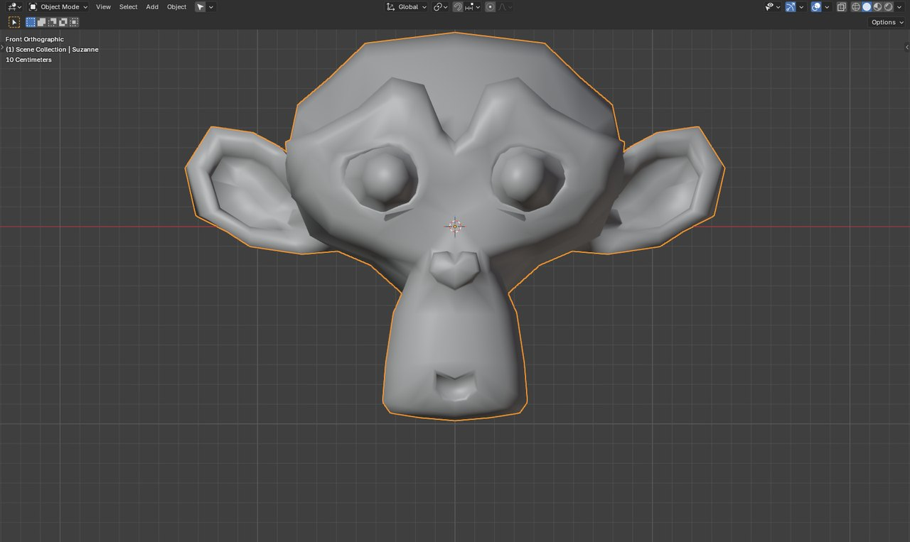

- Select Suzanne, click "Set Base" in "Basis and New Map", and confirm.
- In Edit Mode, raise the vertices on both sides of the mouth area, then return to Object Mode.
- Click "New", enter "Smile" as the name, and confirm.
- In the "Maps" list, click "Basis" to switch to the original shape, and click "Smile" to switch to the smile.
What to look for: Look at the area around the mouth. With "Smile", both sides of the mouth rise and form V-shaped creases; with "Basis", it returns to the original smooth shape. You can store multiple shapes in the same mesh without creating Shape Keys.
ExampleDrive Two Expressions with One Joystick(demonstrated on Suzanne with the Shape Keys smile and open)
Create a Group and tie smile to the right (X=1) and open to the bottom (Y=-1). Just changing the handle position changes the values of both Shape Keys together.
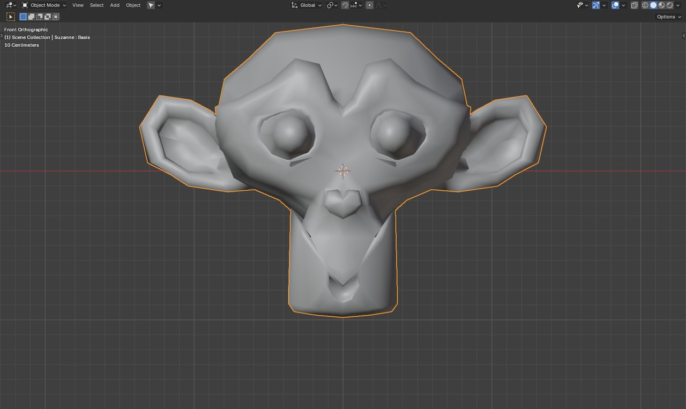
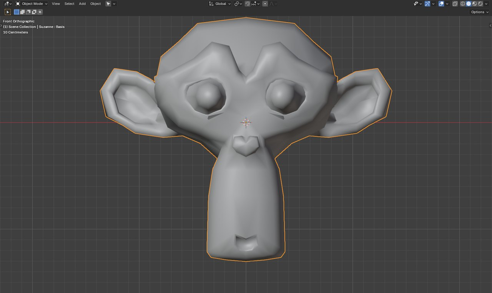
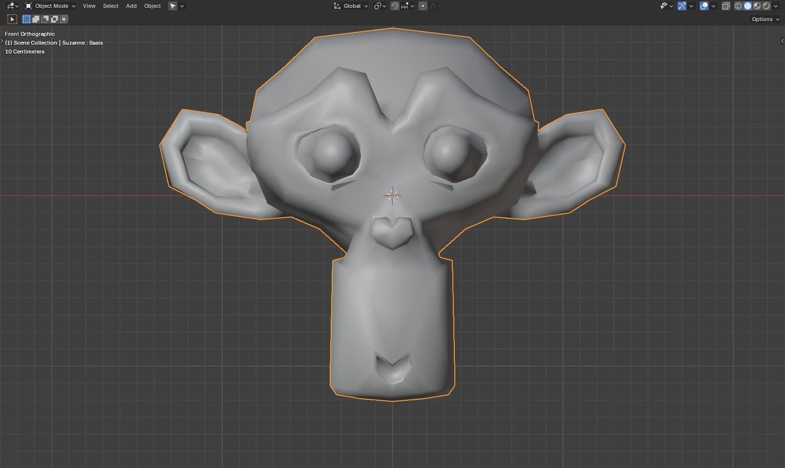
- In "Groups", click "Create the First Group to Set Up".
- Add two rows with the + button next to the "Mappings" list, then select each row and, in "Mapping Settings", set the first row to smile, X 1, Y 0 and the second row to open, X 0, Y -1.
- Click "Edit Values" in "Handle / Values", enter the X and Y values, and click OK.
What to look for: Moving the handle to the right raises both sides of the mouth (smile), moving it down stretches the jaw downward (open), and at the lower right the two blend. Without moving Shape Keys one by one, you can choose an expression with two numbers (X and Y).
2. Key Features
This chapter walks through the features unique to this add-on, using numbered callouts on each figure. The numbers in a figure match the numbered list below it. Click a figure to enlarge it. Each individual setting is described under its own heading in Chapter 5.
2-1. Maps (Save Shapes and Switch Between Them from a List)Top Feature
If you keep adding a Shape Key every time you create an expression or other shape, the list gets long and there are more values to manage. A "Map" stores the difference from the base shape (Basis) inside this add-on. You can save many shapes on one mesh without creating Shape Keys, and just clicking a row in the list switches to that shape. The finished Maps can be exported as ordinary Shape Keys or as separate objects. If you save them to a file, you can carry them even to another mesh with a different vertex order, using the UVs as a guide. In the two images below, "Set Base" and "Load" in "Export" were used on a Suzanne that has the Shape Keys smile and open, and then smile and open in the list were clicked.
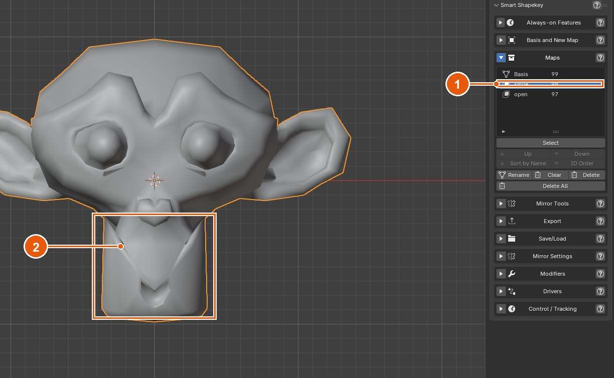
- 1Clicked Row: The clicked row is selected and the shape switches to it
- 2Both Sides of the Mouth: The shape becomes smile and both sides of the mouth rise
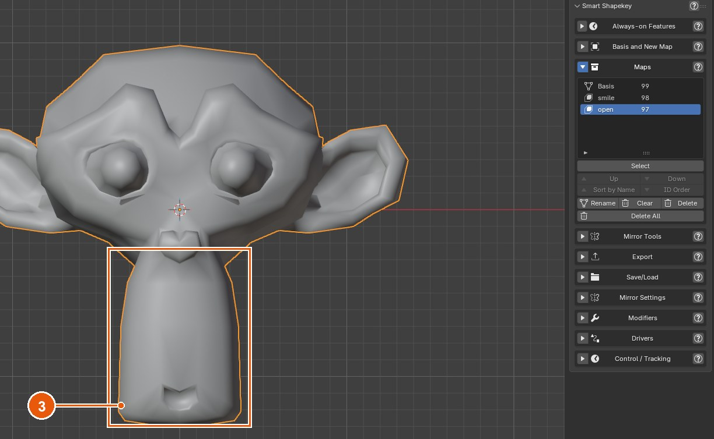
- 3Jaw: The shape becomes open and the jaw stretches downward
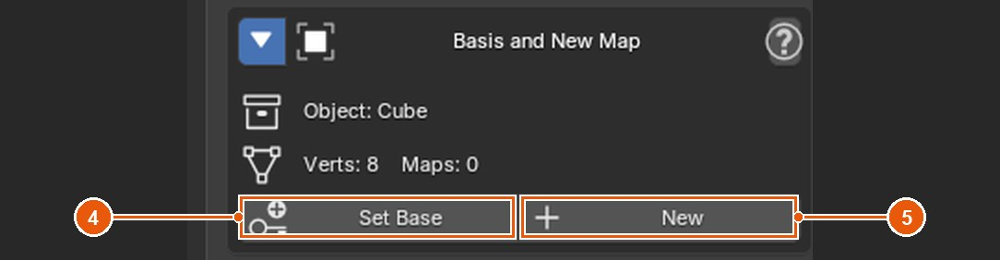
- 4Set Base: Records the current shape as the base shape (Basis). Click it once at the start
- 5New: Creates a new Map from the current shape. Enter a name and confirm
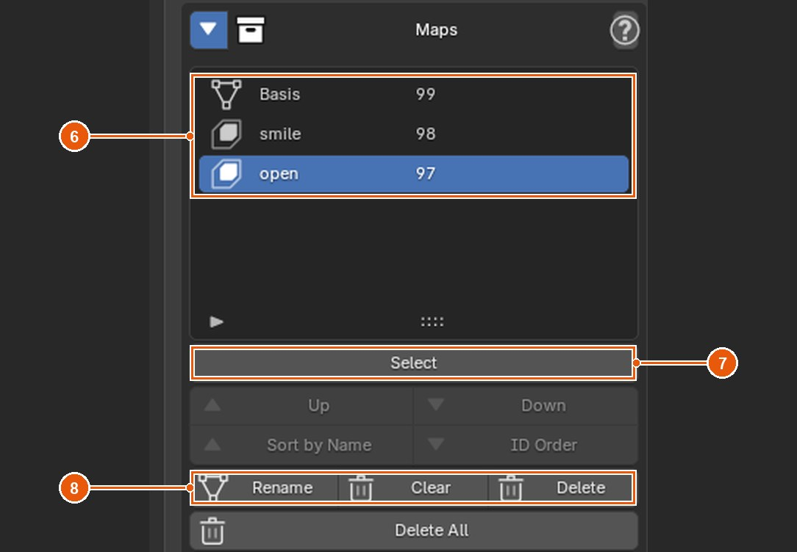
- 6Map List: Click a row to switch to that shape. The number to the right of the name is the channel number. The Basis (mesh icon) cannot be deleted
- 7Select / Edit: Normally "Select" (clicking a row switches the shape). Click it to switch to "Edit", where you can check rows without changing the shape and reorder them with "Move Up", "Sort by Name", and the others just below
- 8Rename / Clear / Delete: Act on the selected Map. "Clear" returns it to the same shape as the Basis. Cannot be clicked while the Basis is selected
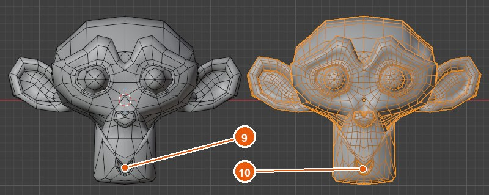
- 9Source: The "Smile" Map was created and written to a file with "Save (All)"
- 10Different Subdivided Mesh: The number and order of vertices differ, but loading gives the same mouth shape as on the left
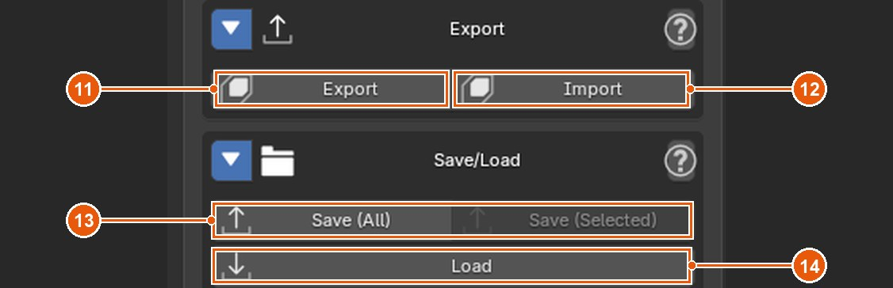
- 11Export: Turns Maps into Shape Keys on this mesh, or into a new object for each Map (choose with "Output")
- 12Load (in the Export Section): Loads existing Shape Keys as Maps. The Maps in the two images above were made this way
- 13Save (All) / Save (Selected): Writes Maps to a file (.skmuv). Use it when carrying them to another .blend file or another mesh
- 14Load (in the Save/Load Section): Puts the Maps in the file into the selected mesh. The destination mesh needs a UV map
- Put the mesh in the base shape (for example, a neutral expression), click ④ "Set Base", and confirm.
- Click ⑤ "New", enter a name, and reshape the mesh into the shape you want to create in Edit Mode or similar.
- Click another row in the list at ⑥, and the current edit is saved to that Map and the shape switches to the clicked row.
- When you need ordinary Shape Keys, use ⑪ "Export". When carrying Maps to another .blend file or mesh, save to a file with ⑬, select the destination mesh, and load with ⑭.
- After "Set Base", do not change the number or connectivity of vertices. While Auto Keying (automatic key insertion) is on, you cannot switch Maps.
- Only saved Maps are used for export. If you do not switch to another Map after your last edit, that edit is not included.
- Loading into a mesh with a different vertex order works only when the UV layout is the same. If the layout differs, a notice appears, the operation stops, and the mesh does not change.
- Maps are saved in the .blend file together with the mesh. You only need to write a file (.skmuv) when carrying them elsewhere.
Settings in detail: 5-3. Basis and New Map, 5-4. Maps, 5-6. Export, 5-7. Save/Load
2-2. Shape Key Axis Control (Blend Expressions with a Joystick)See It in Pictures
A single joystick-like X/Y handle moves many Shape Keys at once. If you set in the "Mappings" rows where the handle must be for each Shape Key to be at its maximum, then just changing the handle position makes the Shape Key nearest the target take effect, and positions in between blend them. Without moving Shape Keys one by one, you can choose an expression with two numbers (X and Y), and you can add keys and Drivers to X and Y. The four images below show a Group with smile tied to the right (X 1) and open tied to the bottom (Y -1), with the handle moved.
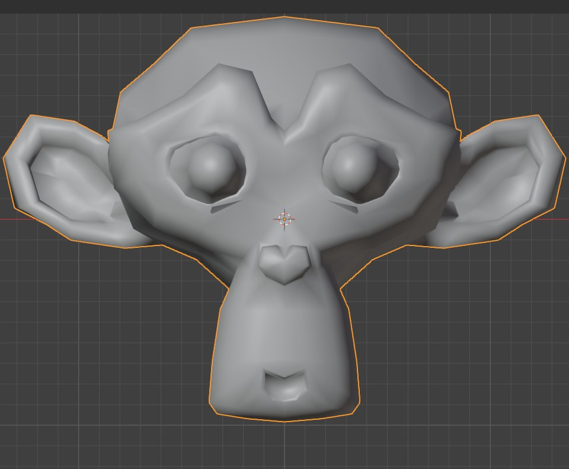


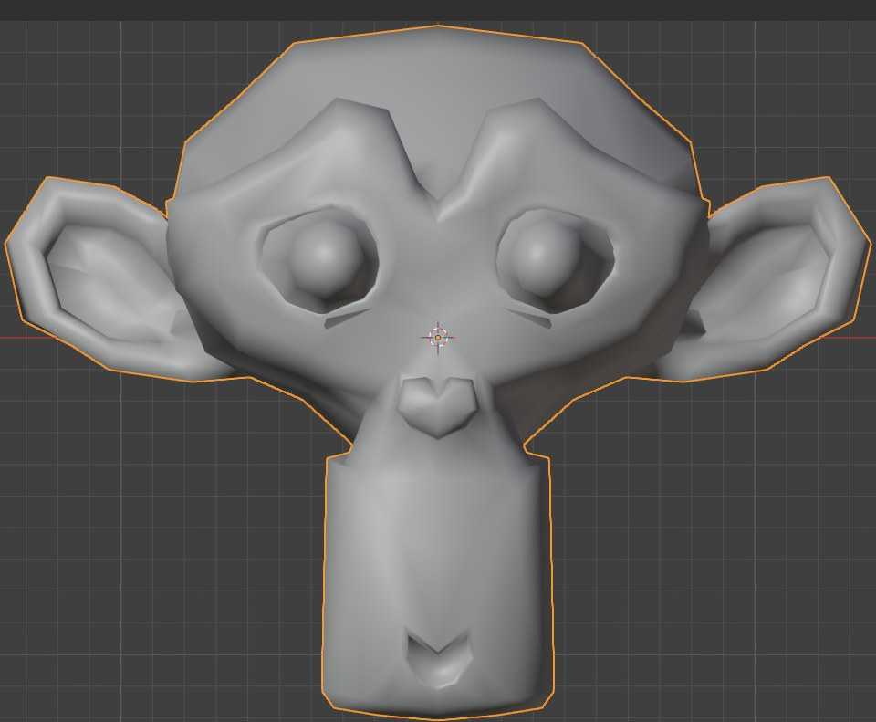
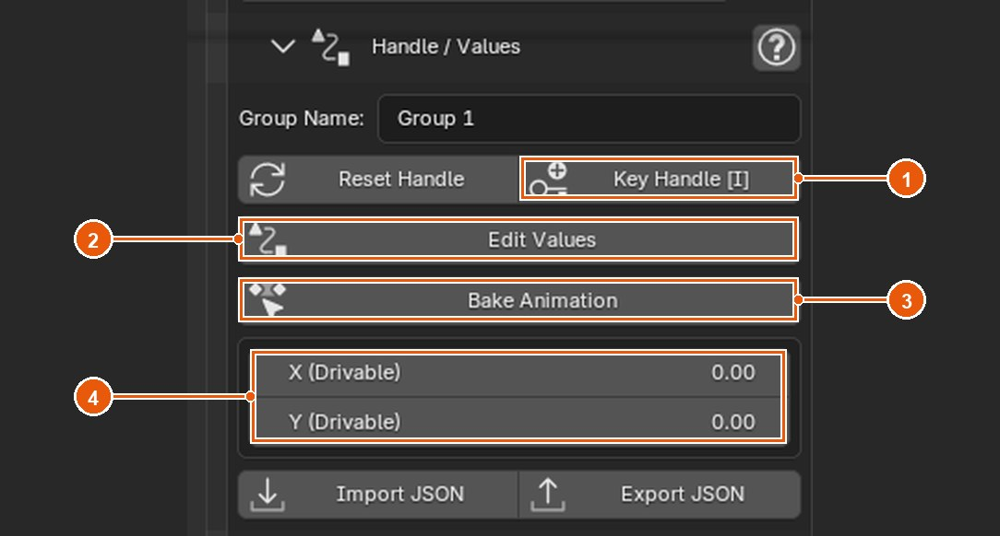
- 1Key Handle [I]: Inserts a key for the current X/Y on the current frame
- 2Edit Values: Opens a window for entering X and Y numerically. The right, down, and lower-right examples above used this to enter values
- 3Bake Animation: Converts the result of moving the handle into keys on ordinary Shape Keys. Use it when exporting to FBX or glTF
- 4X / Y: The current handle position (-1 to 1). You can add keys and Drivers
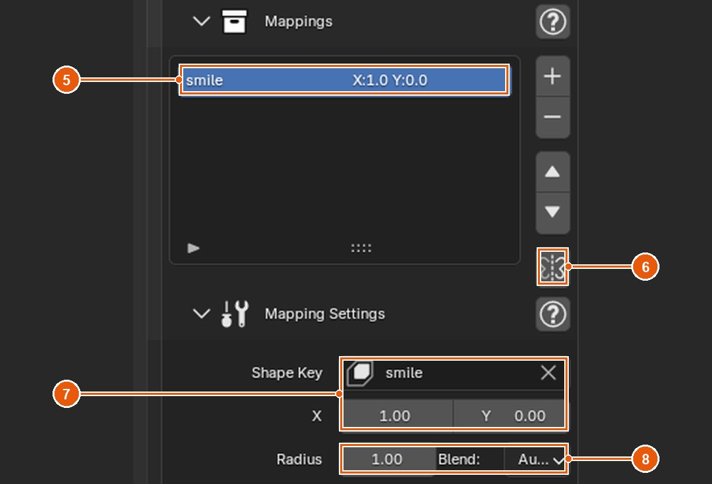
- 5Mapping Row: One row ties one Shape Key to a target X/Y. Add rows with "+" on the right
- 6Mirror Button: Creates left-right symmetrical rows from Shape Keys with paired names such as .L / .R
- 7Shape Key and X / Y: The Shape Key moved by this row, and the handle position where you want it to be at its maximum
- 8Radius / Blend: How far from the target the Shape Key still takes effect (default 1, wider as the value grows), and how the effect fades (Auto, Box Falloff, Radial Falloff, X-Axis, Y-Axis)
- Select a mesh that has the Shape Keys you want to move, and click "Create the First Group to Set Up" in "Groups".
- Add a row with "+" beside the list at ⑤, select the row, and set the Shape Key and target X/Y at ⑦ (in the example above, smile is X 1, Y 0 and open is X 0, Y -1).
- Move X / Y at ④, or enter numbers with ② "Edit Values". To keep the motion, insert keys with ①.
- When exporting to FBX or glTF, use ③ "Bake Animation" to convert it to keys on ordinary Shape Keys.
- Baked keys do not follow later changes to the Mappings. After making changes, bake again.
- One Group is one independent X/Y controller. If you add Groups, you can have separate handles.
- When you set "Axis UI" in "Always-on Toggle" to "On", a joystick appears in the 3D Viewport and you can move it while watching the values. If you press Esc or right-click while dragging in the HUD, it returns to what it was before the operation.
Settings in detail: 5-14. Shape Key Axis Control, 5-16. Handle / Values, 5-17. Mappings, 5-18. Mapping Settings
2-3. Apply Keeping Shape KeysSee It in Pictures
If you try to apply a Modifier to a mesh that has Shape Keys, Blender's standard "Apply" refuses. "Apply Keeping Shape Keys" applies the selected Modifiers and keeps all the Shape Keys. It first checks on a temporary duplicate, and changes the original mesh only when everything succeeds. The three images below show a Suzanne with the Shape Keys smile and open, before and after applying a Subdivision Surface (level 1).
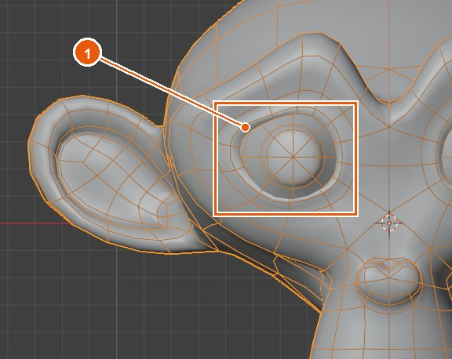
- 1Lines Around the Eye (Before): The spacing between lines is wide. The smooth surface is the shape shown by the Modifier, and the mesh is still the original

- 2Lines in the Same Place (After Applying): The shape did not change, and the spacing between lines became narrower. The Subdivision Surface result has become the mesh itself

- 3Both Sides of the Mouth: The Shape Key smile remains after applying, and setting it to 1 raises both sides of the mouth
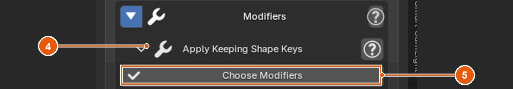
- 4Apply Keeping Shape Keys: A section header inside "Modifiers". Open it with the triangle on the left
- 5Choose Modifiers: Opens a window with a checkbox for each Modifier. Checked ones are applied and unchecked ones remain
- Select a mesh that has Shape Keys and Modifiers, and switch to Object Mode.
- Open ④ "Apply Keeping Shape Keys" in "Modifiers" and click ⑤ "Choose Modifiers".
- Check only the Modifiers you want to apply, and click OK.
- Modifiers that produce the same mesh for every key even when vertices increase, such as Subdivision Surface, Mirror, and Solidify, can be used. Modifiers that create a different mesh for each key, such as Decimate, Boolean, Bevel, and Remesh, fail the check and are aborted without changing the original.
- It cannot be used on a mesh that has Maps (if you need it, export them and then click "Delete All").
- You can undo with Ctrl+Z. It takes time when there are many Shape Keys.
Settings in detail: 5-10. Apply Keeping Shape Keys
3. Getting Started
How to install the add-ons, how to change the interface language, and how the N panel and the "?" help buttons work in every add-on are covered in the "SmartTools Overall Specification". Please read chapters 2 to 5 there first.
| ZIP to install | SmartShapekeySuite_1.0.0.zip |
|---|---|
| Name shown in Blender | Smart Shapekey |
| Supported Blender | 5.1.2 |
4. Where to Find It
A "Smart Shapekey" panel appears in the "Smart Shapekey" tab of the 3D Viewport Sidebar (N panel). The contents appear when the active object is a mesh and you are in Object Mode or Edit Mode. A panel with the same contents also appears in the "Smart Shapekey" tab of the Sidebar in other editors, such as the Image Editor.
| Editors | 3D Viewport (3D Viewport) |
|---|---|
| Tab | Smart Shapekey |
| Mode | Object Mode / Edit Mode |
- For installation, localization, how to open the N panel, and how to use the "?" help button in general, see the relevant chapter of the SmartTools Overall Specification.
- In the 3D Viewport, select one mesh object.
- Switch to Object Mode or Edit Mode.
- Click the "Smart Shapekey" tab in the Sidebar.
- Click the triangle to the left of the section header you want to use to open it.
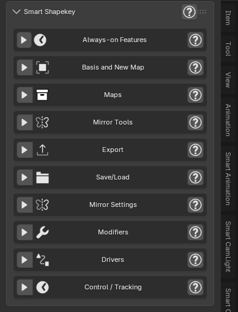
5. Features
Each heading is explained in order from the top of the panel. Click the "?" to the right of a heading to show the same explanation in Blender. The blue "Example" boxes show real operations on simple models such as Suzanne, with the 3D Viewport before and after.
5-1. Smart Shapekey (Whole Panel)
The panel that holds every field of this add-on. From the top, the sections are Always-on Toggle, Basis and New Map, Maps, Mirror Tools, Export, Save/Load, Mirror Settings, Modifiers, Drivers, and Control / Tracking.
Location3D Viewport > Sidebar > "Smart Shapekey" tab
| Item | What it does |
|---|---|
| Header Triangle | Click to open or close that section. The open state is remembered. |
| Header "?" | Opens a popup explaining how to use that section. Opening it does not change the scene. |
| "Select a mesh object." | A single line shown when the active object is not a mesh. Select a mesh and the sections appear. |
| "Switch to Object Mode or Edit Mode." | A single line shown in modes other than Object Mode and Edit Mode, such as Sculpt Mode. |
5-2. Always-on Toggle
A section for turning features that keep running in the background (HUD, UDP receiving, camera, and so on) on and off together in one place. Features that are "Off" are stopped, so everyday work stays light.
LocationAt the very top of the "Smart Shapekey" panel
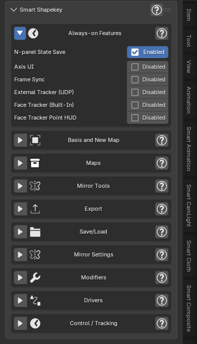
| Item | What it does |
|---|---|
| N-panel State Save | While "On", every time you change a panel setting it is saved to a JSON file in Blender's configuration folder and restored the next time you open Blender. The default is "On". |
| Axis UI | Shows the Shape Axis joystick (the HUD, a control panel overlaid on the screen) in the 3D Viewport. Set it to "On" only while you watch the values and move it. |
| Frame Sync | During playback or timeline scrubbing, updates keyed handles to match the current frame. Set it to "On" only when you key an axis and play it back. |
| External Tracker (UDP) | Receives X/Y values from other apps over UDP (a method of sending values over a network). Set it to "On" only while the sending app is running. |
| Face Tracker (Built-In) | Reads a face with a webcam and moves the Shape Axis. Set it to "On" only while tracking. |
| Face Tracker Point HUD | Draws the face points (landmarks) read by the built-in tracker in the 3D Viewport. They are drawn only while the built-in tracker is running. |
| "Off" / "On" Button | The button at the right of each row. Each click toggles between "Off" and "On". |
- Click the header triangle to open the section.
- Click "Off" at the right of the row for the feature you want to use, so that it becomes "On".
- When you are done, click it again to return it to "Off".
5-3. Basis and New Map
A section for recording the mesh's base shape (Basis) and saving the current shape as a new Map. A Map stores the difference in shape from the Basis inside this add-on.
Location"Smart Shapekey" panel > "Basis and New Map"
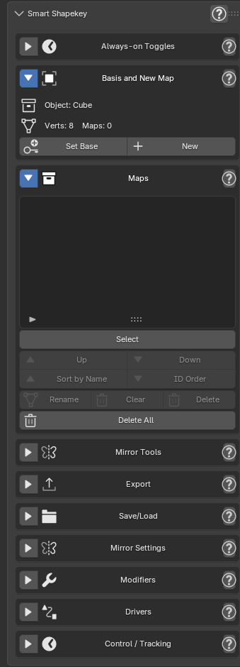
| Item | What it does |
|---|---|
| Object | The name of the target mesh (display only). |
| Verts / Maps | The number of vertices on the target and the number of saved Maps (display only). |
| Set Base | Records the current shape as the Basis. From the second time on, you can choose "Selected Polygons" (sets only the vertices of the faces selected in Edit Mode to the current shape) or "All Polygons". Existing Maps are recalculated so that their visible shapes do not change. The first time, "All Polygons" is used. The visible mesh does not change. |
| New | Creates a new Map from the current mesh shape and selects that Map. Enter a name and confirm. An empty name cannot be used. "Set Base" is required first. |
- Put the mesh in the base shape (for example, a neutral expression).
- Click "Set Base" and confirm.
- Click "New", enter a name, and confirm.
- In Edit Mode or similar, reshape the mesh into the shape you want to create.
- Click another Map in the "Maps" list, and the current edit is saved to that Map.
What changes: Map data is saved in the file together with the mesh. It stays when you save the .blend file.
5-4. Maps
A list of saved Maps. Click a row to switch to that shape. Names, order, and deletion are also managed here.
Location"Smart Shapekey" panel > "Maps"
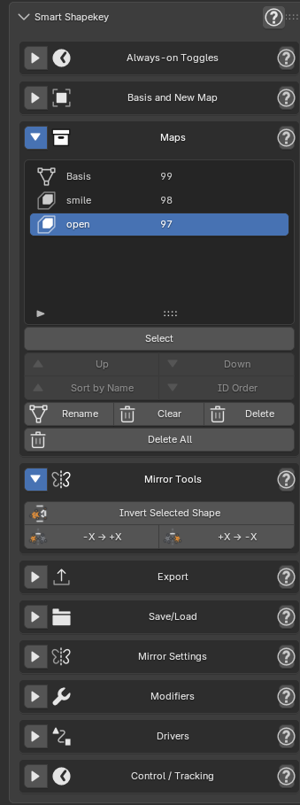
| Item | What it does |
|---|---|
| Map List | Each row shows the Map name and channel number. The Basis has a mesh icon and cannot be deleted. |
| Select / Edit (Mode Buttons) | "Select" is the state where clicking a row switches the shape. "Edit" is the state where you can check rows and reorder them without changing the shape. Normally it is "Select". |
| Up / Down | Available only in "Edit". Moves the selected row up or down by one. Export follows this order. |
| Sort by Name / ID Order | Available only in "Edit". Sorts by name, or by channel number (the order of creation). Shapes and channel numbers do not change. |
| Rename | Renames the selected Map. The same name cannot be used (including names that differ only in uppercase and lowercase). |
| Clear | Returns the selected Map to the same shape as the Basis. Choose "Selected Polygons" or "All Polygons". |
| Delete | After confirmation, deletes the selected Map. |
| Delete All | After confirmation, deletes all of this mesh's Map data. The shape you currently see stays as it is. On a mesh with Shape Keys, it returns to the blended shape of the Shape Keys. |
ExampleSave Shapes as "Maps" and Switch Them in the List(demonstrated on Suzanne)
Record the base shape, then save a shape with both sides of the mouth area raised as the "Smile" Map. Just click a row in the list to switch back and forth between the original shape and the smile shape.
- Select Suzanne, click "Set Base" in "Basis and New Map", and confirm.
- In Edit Mode, raise the vertices on both sides of the mouth area, then return to Object Mode.
- Click "New", enter "Smile" as the name, and confirm.
- In the "Maps" list, click "Basis" to switch to the original shape, and click "Smile" to switch to the smile.
What to look for: Look at the area around the mouth. With "Smile", both sides of the mouth rise and form V-shaped creases; with "Basis", it returns to the original smooth shape. You can store multiple shapes in the same mesh without creating Shape Keys.
ExampleRestore Only the Right Half of a Map to the Original Shape(demonstrated on Suzanne)
Choosing "Selected Polygons" in "Clear" returns only the selected faces of the Map to the base shape. This is useful for making a one-sided expression.


- With the "Smile" Map selected, switch to Edit Mode.
- Select the faces on the right half of the face (the right side of the screen).
- Click "Clear" in "Maps", choose "Selected Polygons", and click OK.
What to look for: Only on the right side of the screen does the raised mouth area return to the original shape; the left side stays raised. The shape of the unselected parts stays as it is.
ExampleView a Map's Shape by Clicking It, Even on a Mesh with Shape Keys(demonstrated on Suzanne with the Shape Keys smile and open)
Even on a mesh with Shape Keys, clicking a row in the list shows that Map's shape in the 3D Viewport. Click Basis to return to the original shape.
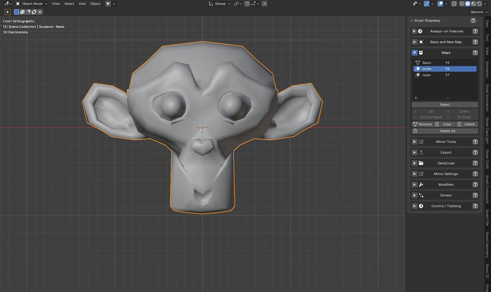
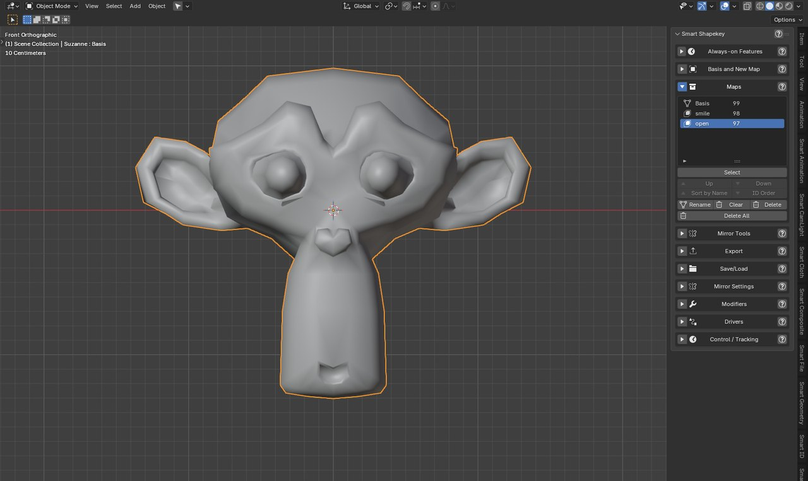

- In Object Mode, select the Suzanne that has Shape Keys.
- Click "Set Base" and confirm, then click "Load" in "Export" and confirm.
- In the "Maps" list, click smile, open, and Basis in that order.
What to look for: Look at the area around the mouth. With smile, both sides of the mouth rise; with open, the jaw stretches downward; and with Basis, it returns to the original. In the "Maps" list in the Sidebar, the row you clicked is selected.
5-5. Mirror Tools
Corrects the shape of the selected Map for the selected vertices. It either inverts the direction of the change around the Basis, or copies the change on one side to the opposite side.
Location"Smart Shapekey" panel > "Mirror Tools"
| Item | What it does |
|---|---|
| Invert Selected Shape | The selected vertices move to the opposite side around the Basis position. A raised shape becomes a shape lowered by the same amount. |
| -X → +X / +X → -X | Copies the change of the vertices selected on the side where the arrow starts, with its direction inverted, to the corresponding vertices on the opposite side. The text changes to match the axis in "Mirror Settings". You do not need to select the vertices on the opposite side. Vertices on the center line do not change. |
- In the "Maps" list, click a Map other than the Basis.
- In Edit Mode, select vertices. When copying between left and right, select the side where you made the shape (selecting everything is also fine).
- Click "Invert Selected Shape", or the button whose arrow starts from that side.
- Check the result in the 3D Viewport. The saved Map is updated on the spot.
ExampleCopy an Expression Made on One Side to the Opposite Side(demonstrated on Suzanne)
Create a Map with only the left side of the mouth raised, then copy it to the right side with "-X > +X". You do not have to make the same shape twice for the left and right.
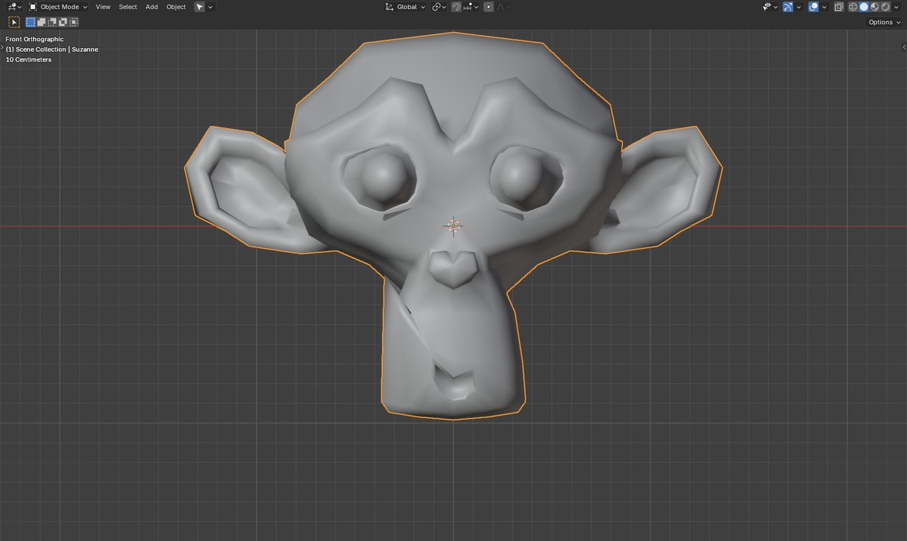

- Click "Set Base" and confirm.
- In Edit Mode, raise only the mouth area on the -X side of the face (the left of the screen, seen from the front), then return to Object Mode and create the "One Side" Map with "New".
- In Edit Mode, select all vertices.
- Click "-X > +X" in "Mirror Tools".
What to look for: Look at the area around the mouth. In "Before", only the left side of the screen is raised. In "After", the right side of the screen is raised the same way, and the left and right match.
ExampleInvert the Smile to Lower Both Corners of the Mouth(demonstrated on Suzanne)
"Invert Selected Shape" moves the selected vertices to the opposite side around the Basis position. A raised shape becomes a lowered shape.
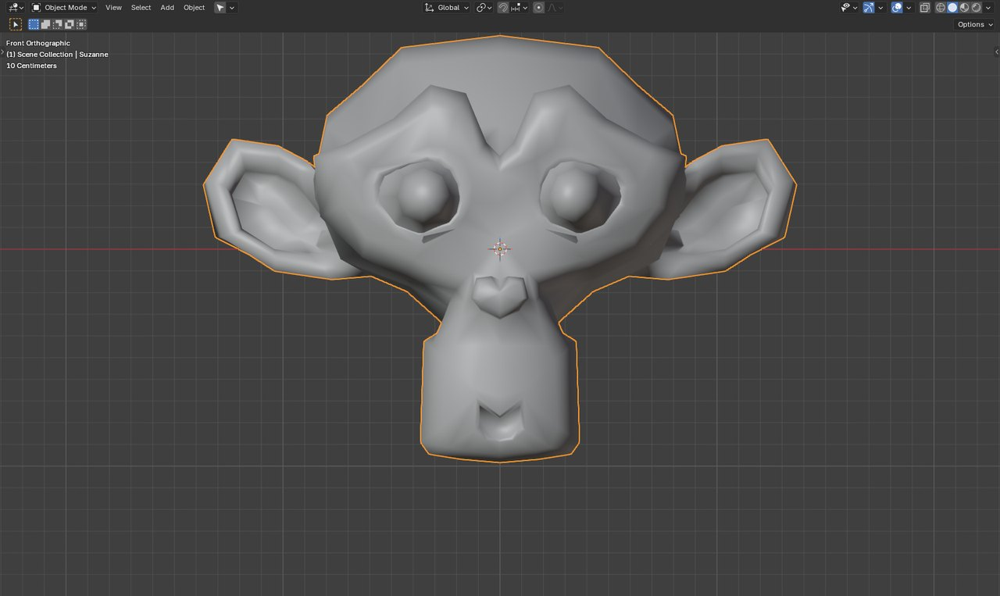
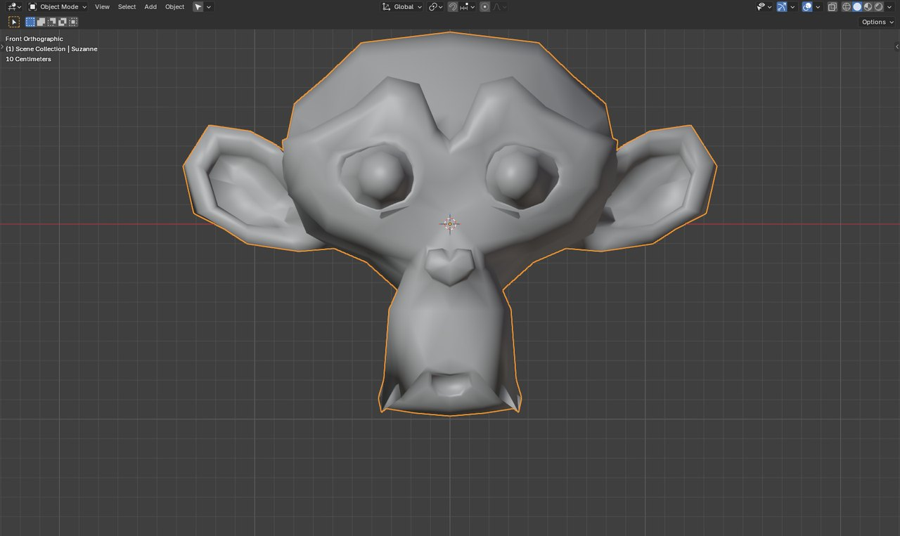
- Select the "Smile" Map.
- In Edit Mode, select all vertices.
- Click "Invert Selected Shape" in "Mirror Tools".
What to look for: Look at both sides of the mouth. The corners of the mouth that were raised are lowered by the same amount.
5-6. Export
Turns saved Maps into ordinary Shape Keys on the same mesh, or into objects with separate meshes. Conversely, you can also load existing Shape Keys as Maps.
Location"Smart Shapekey" panel > "Export"
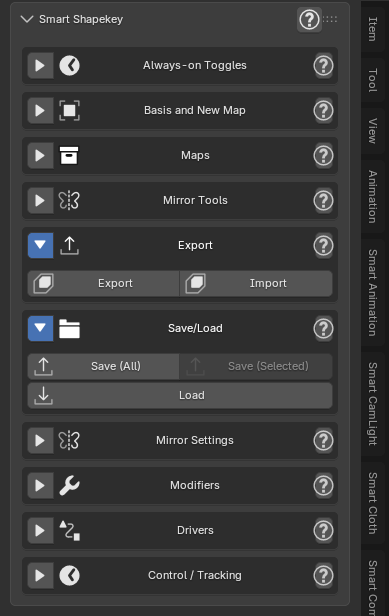
| Item | What it does |
|---|---|
| Export | Opens the Export dialog. When you set "Maps" to "Edit" and check some Maps, only the checked Maps are exported. If nothing is checked, all Maps are exported. |
| Output | A field in the dialog. Choose "Shape Keys" (make them Shape Keys of this mesh) or "Objects" (make a new object for each Map). The default is "Shape Keys". |
| Replace matching Shape Keys | Available only for "Shape Keys". When turned on, it overwrites Shape Keys that have the same name. The default is off. |
| Prefix / Spacing / Line | Available only for "Objects". The leading characters of the new object names, the distance between objects (default 10), and the number placed in one row (default 5). The objects are laid out starting from the position of the active object. |
| Load | After confirmation, loads all Shape Keys other than the Basis into Maps as differences from the Basis. Existing Maps (other than the Basis) are deleted and rebuilt from the Shape Keys. Shape Key values return to 0, the Shape Axis handles return to the center, and the mesh shape returns to the Basis. The Shape Keys themselves remain. "Set Base" is required first. |
- Click another Map in the "Maps" list to save your last edit.
- Click "Export".
- In the dialog, set "Output" and other options, then click OK.
What changes: Shape Keys, or new objects, are added. You can remove them with Ctrl+Z.
ExampleLoad Shape Keys and Export Each Expression as a Separate Object(demonstrated on Suzanne with the Shape Keys smile and open)
Load the existing Shape Keys as Maps, then use "Export" to make a separate object for each expression. Use this when you want to line up the expressions and compare them.

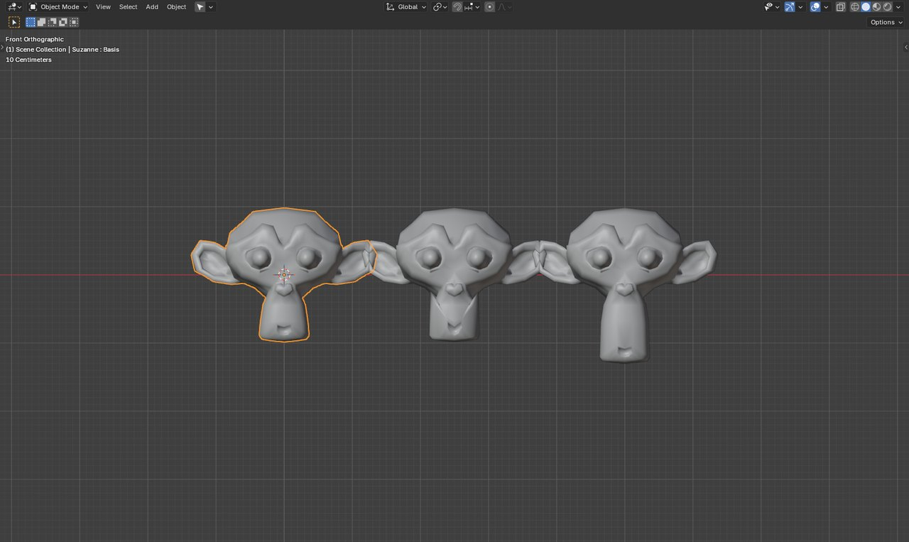
- Select Suzanne, click "Set Base", and confirm.
- Click "Load" in "Export" and confirm (smile and open become Maps, and the shape returns to Basis).
- Click "Export", set "Output" to "Objects" and "Spacing" to 2.5, and click OK.
What to look for: Two objects, smile (a face with both sides of the mouth raised) and open (a face with the jaw stretched downward), are lined up next to the original Suzanne. The original object stays as it is.
ExampleLoading Shape Keys Returns the Shape to Basis(demonstrated on Suzanne with the Shape Keys smile and open)
"Load" rebuilds the Shape Keys as Maps. The Shape Key values become 0, and the shape returns to Basis. The Shape Keys themselves remain.
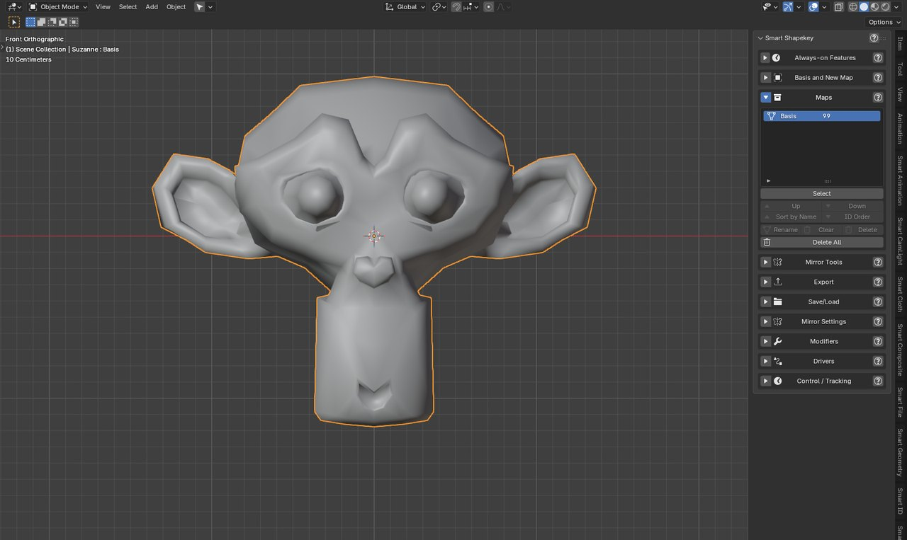
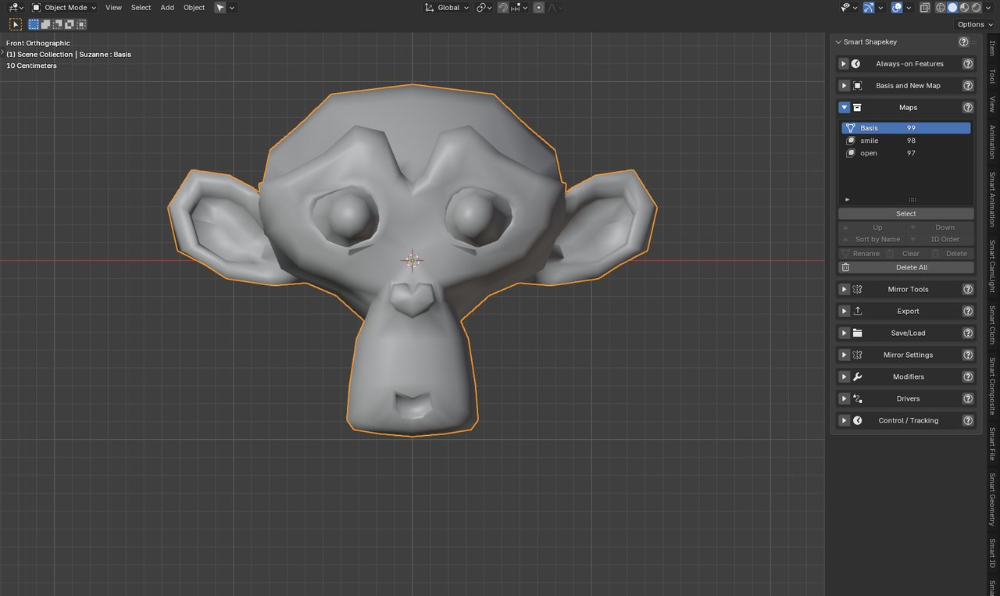
- Set the Shape Key values to smile 0.7 and open 0.6 beforehand.
- Click "Set Base" and confirm.
- Click "Load" in "Export" and confirm.
What to look for: "Before" shows the two expressions blended. In "After", the shape is back to the original, and smile and open rows have been added to the "Maps" list in the Sidebar.
5-7. Save/Load
Saves Maps to a separate file (.skmuv) and reads them back. Use it when carrying Maps to another .blend file or another mesh. You do not need it just to keep Maps. Maps are stored inside the mesh, so they stay when you save the .blend file.
Location"Smart Shapekey" panel > "Save/Load"
| Item | What it does |
|---|---|
| Save (All) | Writes the Basis shape and all Maps other than the Basis to the file. It is grayed out and cannot be clicked while there are no Maps. |
| Save (Selected) | Writes only the Maps you checked after setting "Maps" to "Edit". It is grayed out and cannot be clicked while nothing is checked. |
| Load | When you choose a file, a window opens. Check the Maps to load and click OK. This replaces this mesh's Maps and Basis with those in the file, and the mesh shape also becomes the loaded Basis. Maps you uncheck in the window are not loaded. |
| Select All / Deselect All | Buttons in the load window. They check or uncheck all the checkboxes at once. |
- Save: Click "Save (All)" and choose the file name and location. The execute button on the file selection screen is "Save Map File".
- If a file with the same name exists, a confirmation appears before it is replaced.
- Load: Select the destination mesh, click "Load", and choose the file.
- In the window that opens, check the Maps to load and click OK.
What changes: Loading can be undone with Ctrl+Z. Saving only writes a file, so delete files you no longer need yourself.
ExampleSave Maps to a File and Carry Them to Another Suzanne(demonstrated on Two Suzannes)
Save the Maps of the left Suzanne to a file and load them into the right Suzanne (the top of its head has been stretched). You can carry Maps to a mesh that has the same vertex order and a UV map. When you load, the destination's shape changes to the Basis in the file.
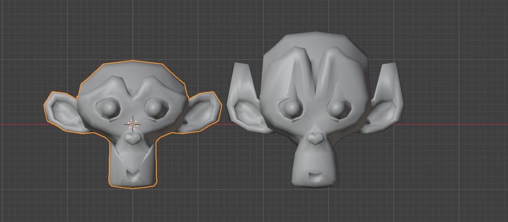
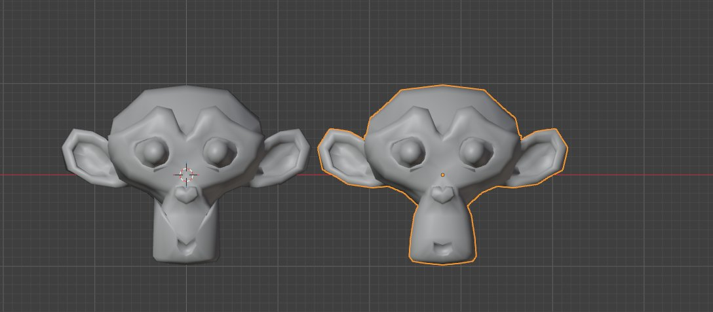

- Select the left Suzanne and create the "Smile" Map with "Set Base" and "New".
- Click "Save (All)" in "Save/Load" to save to a file.
- Select the right Suzanne, click "Load", and choose the file. In the window that opens, make sure "Smile" is checked, and click OK.
- Click "Smile" in the "Maps" list.
What to look for: Look at the right Suzanne. Loading returns the stretched top of the head to the shape of the Basis in the file. Clicking "Smile" raises both sides of the mouth, just like on the left.
ExampleCarry Maps to a Different, Subdivided Mesh(demonstrated on Two Suzannes)
Save the Maps of the left Suzanne to a file and load them into the subdivided Suzanne on the right. Even if the vertex order differs, the shapes are loaded using the UVs as a guide, as long as the UV layout is the same.

- Select the left Suzanne and create the "Smile" Map with "Set Base" and "New".
- Click "Save (All)" in "Save/Load" to save to a file.
- Select the subdivided Suzanne on the right, click "Load", choose the file, and click OK in the window that opens.
- Click "Smile" in the "Maps" list.
What to look for: Look at the fine wireframe of the right Suzanne. The vertex count stays high, and both sides of the mouth rise just like on the left.
ExampleLoading Stops for a Mesh with a Different UV Layout(demonstrated on Two Suzannes)
The right Suzanne has been subdivided, and its UVs have also been shrunk to half size. Because both the vertex order and the UV layout differ, loading as is would distort the shape. In this case, loading shows a notice and stops, and the mesh does not change.


- Save the left Suzanne's Maps to a file with "Save (All)".
- Select the right Suzanne, click "Load", choose the file, and click OK in the window that opens.
- A notice beginning "This mesh's UV layout differs from the file, so loading would distort the shape." appears.
- Make the UV layout the same as the source, then click "Load" again.
What to look for: The right Suzanne's shape is the same before and after clicking Load. After you fix the UVs and load again, both sides of the mouth rise just like on the left.
ExampleCarry Maps to a Mesh with Some Faces Deleted(demonstrated on Two Suzannes)
The right Suzanne is the same as the left one, except that the tips of both ears have been deleted. The vertex order differs, but the UVs and shape of the remaining parts are the same as on the left, so the Maps can be loaded.


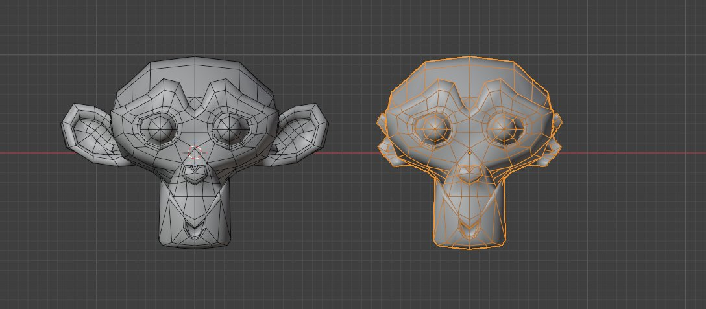
- Save the left Suzanne's Maps to a file with "Save (All)".
- Select the right Suzanne, click "Load", choose the file, and click OK in the window that opens.
- Click "Smile" in the "Maps" list.
What to look for: Even on the right Suzanne, which has no ear tips, both sides of the mouth rise just like on the left.
ExampleIf the Source UVs Overlap, Loading Stops for a Mesh with a Different Vertex Order(demonstrated on Two Suzannes)
The left Suzanne has its left and right UVs overlapped in the same place. Because the same UV position holds both the right and left of the face, the position to use cannot be determined for the subdivided Suzanne on the right. In this case, loading shows a notice and stops.
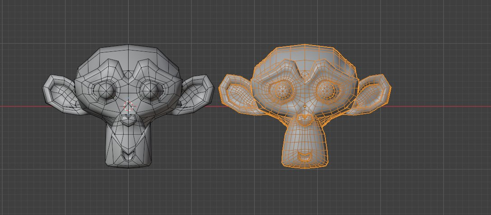

- Save the left Suzanne's Maps to a file with "Save (All)".
- Select the subdivided Suzanne on the right, click "Load", choose the file, and click OK in the window that opens.
- A notice beginning "The source mesh's UVs overlap, so" appears.
What to look for: The right Suzanne's shape is the same before and after clicking Load. If you save from a mesh whose UVs do not overlap, the Maps can be loaded. Into a mesh with the same vertex order, the shapes are loaded even if the UVs overlap.
5-8. Mirror Settings
Settings for the mirror plane used by the "-X > +X" and "+X > -X" buttons in "Mirror Tools". Each mesh has its own values. Changing the values alone does not change the mesh.
Location"Smart Shapekey" panel > "Mirror Settings"
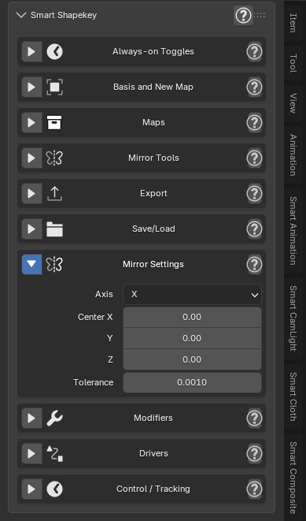
| Item | What it does |
|---|---|
| Axis | The axis along which left and right face each other. Choose from X, Y, and Z. The default is X. |
| Center X / Y / Z | The coordinates of the center of the mirror plane (in the mesh's local coordinates). Only the value for the selected axis is used. The default is 0. |
| Tolerance | The distance allowed when searching for the corresponding vertex on the opposite side. The default is 0.001. Raise it only when the model's left and right are slightly off and nothing is copied. |
5-9. Modifiers
A section that gathers tools for Modifiers (deformations and processing applied to a mesh afterward). It contains "Apply Keeping Shape Keys".
Location"Smart Shapekey" panel > "Modifiers"
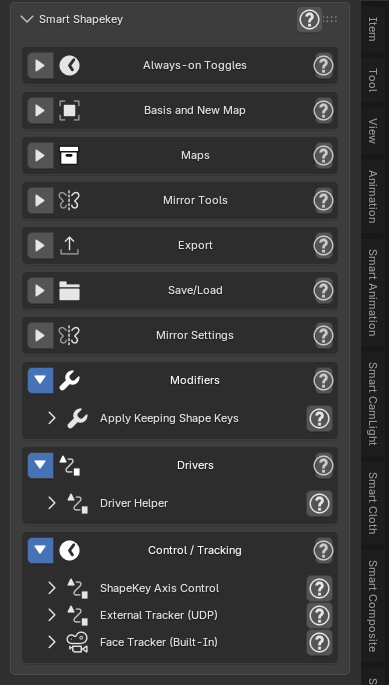
| Item | What it does |
|---|---|
| Apply Keeping Shape Keys | A section header inside. Open it with the triangle on the left to use it. |
5-10. Apply Keeping Shape Keys
Applies the selected Modifiers to a mesh that has Shape Keys, while keeping all the Shape Keys. Blender's standard "Apply" refuses this case. It first checks on a temporary duplicate, and changes the original mesh only when everything succeeds.
Location"Modifiers" > "Apply Keeping Shape Keys"
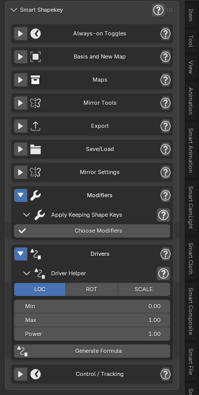
| Item | What it does |
|---|---|
| Choose Modifiers | Opens a dialog with a checkbox for each Modifier. Checked Modifiers are applied, and unchecked ones are left as they are. |
| Status Line | When conditions are not met, messages such as "The active mesh has no Shape Keys.", "Switch to Object Mode.", and "The active mesh has no modifiers to apply." appear. |
- Select a mesh that has Shape Keys and Modifiers, and switch to Object Mode.
- Click "Choose Modifiers".
- Check only the Modifiers you want to apply, and click OK.
What changes: The selected Modifiers disappear from the list and are reflected in the mesh. You can undo with Ctrl+Z.
ExampleApply Subdivision While Keeping Shape Keys(demonstrated on Suzanne with the Shape Keys smile and open)
Blender's standard "Apply" refuses on a mesh with Shape Keys. With "Apply Keeping Shape Keys", you can apply even Modifiers that add vertices, such as Subdivision Surface, and all Shape Keys remain.
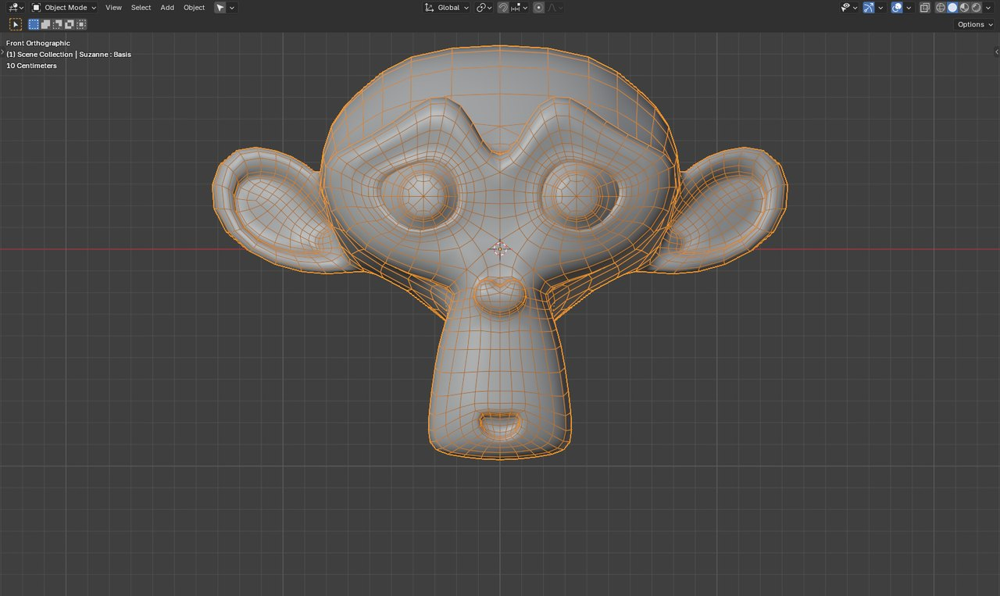
- Add Subdivision Surface (level 1) to the Suzanne that has Shape Keys.
- Click "Choose Modifiers" in "Apply Keeping Shape Keys".
- Check the Modifier and click OK.
- Set the value of the Shape Key smile to 1 and check the shape.
What to look for: Look at the wireframe lines. After applying, the mesh itself has become finer. If you then set smile to 1, both sides of the mouth rise, which shows that the Shape Keys still work.
5-11. Drivers
A section that gathers tools for Drivers (a mechanism that automatically determines one value from another value). It contains "Driver Helper".
Location"Smart Shapekey" panel > "Drivers"
| Item | What it does |
|---|---|
| Driver Helper | A section header inside. Open it with the triangle on the left to use it. |
5-12. Driver Helper
Builds a Driver expression that converts the location, rotation, or scale value of a bone or object into a Shape Key value from 0 to 1. The finished expression appears in a popup, so copy it and paste it into the Driver.
Location"Drivers" > "Driver Helper"
| Item | What it does |
|---|---|
| LOC / ROT / SCALE | The type of channel (location, rotation, scale) that the variable var reads. For ROT, enter "Min" and "Max" in degrees. |
| Min | The input value at which the Shape Key is still 0 (the value where it starts to move). |
| Max | The input value at which the Shape Key becomes 1. It cannot be the same value as "Min". |
| Power | The curve of the motion. 1.0 is a straight line; larger values start slowly, and smaller values start quickly. The default is 1.0. |
| Generate Formula | Builds the expression and opens a popup containing the text. |
- Right-click the Shape Key value and add a Driver with "Add Driver". Name the variable var and specify the channel you want to read.
- In this section, choose LOC, ROT, or SCALE, and set "Min" and "Max".
- Click "Generate Formula" and copy the text in the popup.
- Paste it into the Driver's "Expression" field.
5-13. Control / Tracking
A section that gathers the joystick-style control of Shape Keys and input from outside. It contains "Shape Key Axis Control", "External Tracker (UDP)", and "Face Tracker (Built-In)".
Location"Smart Shapekey" panel > "Control / Tracking"
| Item | What it does |
|---|---|
| Shape Key Axis Control | A section for blending Shape Keys with an X/Y handle. |
| External Tracker (UDP) | A section for receiving values from other apps. |
| Face Tracker (Built-In) | A section for baking facial captures and for webcam input. |
5-14. Shape Key Axis Control
Creates a joystick-style X/Y controller. Each Group has one X/Y handle, and each row in the Mappings decides which Shape Key takes effect near which X/Y position.
Location"Control / Tracking" > "Shape Key Axis Control"
| Item | What it does |
|---|---|
| Reset | Returns the handle of the selected Group to the center. |
| Reset All | Returns the handles of all Groups to the center. |
| Reset HUD | Restores the position and size of the Axis UI to their defaults. |
| Point Drag | When turned on, you can drag the Mapping points directly inside the HUD. Keeping it off is recommended except when you are placing points. |
- Select a mesh (one that has the Shape Keys you want to move).
- Open "Groups" and create the first Group.
- Add rows in "Mappings", and in "Mapping Settings" set the Shape Key and target X/Y for each row.
- Move X and Y in "Handle / Values".
ExampleDrive Two Expressions with One Joystick(demonstrated on Suzanne with the Shape Keys smile and open)
Create a Group and tie smile to the right (X=1) and open to the bottom (Y=-1). Just changing the handle position changes the values of both Shape Keys together.
- In "Groups", click "Create the First Group to Set Up".
- Add two rows with the + button next to the "Mappings" list, then select each row and, in "Mapping Settings", set the first row to smile, X 1, Y 0 and the second row to open, X 0, Y -1.
- Click "Edit Values" in "Handle / Values", enter the X and Y values, and click OK.
What to look for: Moving the handle to the right raises both sides of the mouth (smile), moving it down stretches the jaw downward (open), and at the lower right the two blend. Without moving Shape Keys one by one, you can choose an expression with two numbers (X and Y).
5-15. Groups
Manages the Shape Axis Groups of the active object. One Group is one independent X/Y controller.
Location"Shape Key Axis Control" > "Groups"
| Item | What it does |
|---|---|
| Create the First Group to Set Up | Appears only when there are no Groups yet. Click it to create the first Group. |
| Group List | The Groups of the active object. Click one to select it. |
| + / - | Adds a Group / deletes the selected Group. Deleting a Group also deletes its Mappings. |
| Up and Down Arrows | Changes the order of the Groups. |
5-16. Handle / Values
Moves the handle of the selected Group numerically, and handles keying, baking, and reading and writing JSON. It appears only when a Group exists.
Location"Shape Key Axis Control" > "Handle / Values"
| Item | What it does |
|---|---|
| Group Name | The name of the Group. |
| Reset Handle | Returns X and Y to 0. |
| Key Handle [I] | Inserts a key for the current X/Y on the current frame. |
| Edit Values | Opens a popup for entering X/Y precisely. |
| Bake Animation | Set the start frame, end frame, and step, and convert the result of moving the handle into keys on ordinary Shape Keys. Use it when exporting to FBX or glTF. The step defaults to 1 (every frame). |
| X (Drivable) / Y (Drivable) | The current handle position (-1 to 1). You can add keys and Drivers to it. |
| Import JSON / Export JSON | Loads a JSON file as a new Group / exports the Mappings of the selected Group to JSON. |
5-17. Mappings
A list of the rows of the selected Group. Each row ties one Shape Key to a target X/Y point.
Location"Shape Key Axis Control" > "Mappings"
| Item | What it does |
|---|---|
| Mapping List | The rows moved by this Group. The Shape Key name and the target X and Y are shown. |
| + / - | Adds / deletes a row. |
| Up and Down Arrows | Changes the order of the rows. |
| Mirror Button | Creates left-right symmetrical rows from paired Shape Key names such as .L / .R. |
5-18. Mapping Settings
Edits the selected Mapping row. Decides which Shape Key takes effect, where on the controller, and over how wide an area.
Location"Mappings" > "Mapping Settings"
| Item | What it does |
|---|---|
| Shape Key | The Shape Key moved by this row. |
| X / Y | The position on the controller where you want that Shape Key to be at its maximum. |
| Radius | How far from the target the Shape Key still takes effect. The larger the value, the wider the effect. The default is 1. |
| Blend | How the effect fades. Choose from "Auto", "Box Falloff", "Radial Falloff", "X-Axis", and "Y-Axis". |
5-19. Global Animation Presets
Saves the handle positions of all objects and all Groups in the scene as a named preset, and calls them up. Use it for a list of poses or for animation drafts.
Location"Shape Key Axis Control" > "Global Animation Presets"
| Item | What it does |
|---|---|
| Preset List, + / -, Up and Down Arrows | Adds, deletes, and reorders presets. |
| Preset Name | The name of the selected preset. |
| Set | Stores the current handle positions in the preset. |
| Call | Applies the saved positions to the handles. |
| Key | Applies the saved positions and inserts keys on those values. |
5-20. External Tracker (UDP)
Receives X/Y values from other apps over UDP and applies them to a Shape Axis Group.
Location"Control / Tracking" > "External Tracker (UDP)"
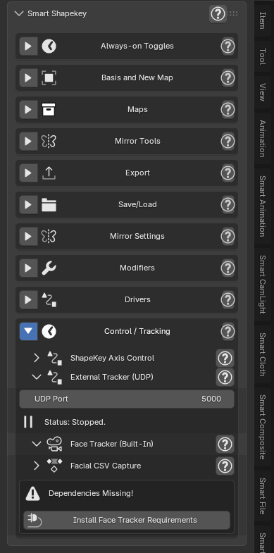
| Item | What it does |
|---|---|
| UDP Port | The port number on which Blender waits to receive (1024 to 65535, default 5000). Set it to the same number as the sending app. |
| Status Line | Shows either "Status: Stopped." or "Status: Listening (bounded/coalescing)." |
- Create a Group and prepare the sending app.
- Set "UDP Port" to the same number as the sending app.
- In "Always-on Toggle", set "External Tracker (UDP)" to "On".
- When you are done, return it to "Off".
5-21. Face Tracker (Built-In)
Reads face points (landmarks) from a webcam and moves a Shape Axis Group live. At the very top of this section there is also "Facial CSV Capture", which bakes facial captures.
Location"Control / Tracking" > "Face Tracker (Built-In)"
| Item | What it does |
|---|---|
| Dependencies are missing! | Appears when components needed for webcam reading are missing. |
| Install Face Tracker Requirements | Appears only when required components are missing. It connects to the internet only when you click it, and installs OpenCV and MediaPipe into Blender's configuration folder. While components are missing, the fields from "Camera" downward do not appear. |
| Camera | The webcam number. The first camera is 0. |
| Status Line | While stopped it shows "Status: Stopped until you explicitly start it.", and while running it shows the FPS. |
| Reference Map | Opens an image of the landmark numbers in the OS's default image viewer. |
- The first time, click "Install Face Tracker Requirements".
- Choose the "Camera" number.
- In "Live Target Group", add a row and choose an object and a Group.
- In "Tracker Settings", apply a preset and adjust each axis.
- In "Always-on Toggle", set "Face Tracker (Built-In)" to "On" to start.
5-22. Facial CSV Capture
Bakes recorded ARKit 52-expression data (52 coefficients for facial expressions defined by Apple) from a CSV file or recorded video into Actions (collections of keys) on the facial rig's controller bones or on the face mesh's Shape Keys. It produces two Actions: RAW, which is the capture as recorded, and EDIT, for hand editing. Tools for building a facial rig are also here, with a section header marked "?" for each group.
Location"Face Tracker (Built-In)" > "Facial CSV Capture"
| Item | What it does |
|---|---|
| Facial Rig | Specify the Armature (collection of bones) that has the facial controllers. It is used in the sections for importing into bones, head rotation, initial shapes, and the ARKit rig. |
| Result Line (Bottom) | The result of the last operation. At first it shows "Not imported". Read it after each operation. |
- Switch to Object Mode and save a copy of your work under a different name.
- Choose a "Facial Rig".
- When putting a capture into a finished model, use "Capture settings", then "Calibration (EDIT only)", then "Bake and RAW / EDIT", in that order.
5-23. Initial shapes (rig building)
Creates draft Shape Keys for the ARKit 52 expressions from the poses of an Auto-Rig Pro (ARP) facial rig. A tool for the rig-building stage.
Location"Facial CSV Capture" > "Generate Initial Shapes"
| Item | What it does |
|---|---|
| Export Facial Working Copy | Writes the selected facial parts and the rig to a separate .blend file. The open file does not change. |
| Initial Shape Strength | The multiplier for the strength of the rig's poses (0.1 to 3, default 1). |
| Custom Pose Recipe (Optional) | A JSON file describing how to make the poses for the 52 expressions. If empty, the bundled recipe is used. |
| Generate 52 Initial Shapes from ARP | Moves the rig according to the recipe and creates those shapes as Shape Keys with ARKit names. What you get is a draft. |
| Apply Correction Preset / Restore Archived Initial Shapes | Applies the corrections in a .ssfacial file to the initial shapes / restores the shapes stored before they were applied. |
| Jaw Assist Limit | The upper limit of the jaw opening added in response to tongue input (0.01 to 1, default 0.5). It does not change the coefficients of the captured Action. |
| Create Jaw Assist / Remove Jaw Assist | Creates an assist that opens the jaw slightly in response to tongue input / removes only the assist created by this tool. |
5-24. Corrective Key (Two Inputs)
Creates a Corrective Key that fixes shape errors when two ARKit expressions take effect at the same time (for example, jawOpen and tongueOut), and connects it with Drivers so that it takes effect automatically from the values of the two inputs. Drivers are a standard Blender feature, so playback works even without this add-on.
Location"Facial CSV Capture" > "Corrective Key (Two Inputs)"
| Item | What it does |
|---|---|
| Corrective Response | Choose from "BOX Weight" (weaker the farther from the two centers), "Ramped Inputs", "First Input with Second Released", and "Plateau BOX". The default is "BOX Weight". |
| Corrective Key | The name of the Corrective Key to create or connect. |
| First ARKit Input / Second ARKit Input | The names of the two ARKit expressions that trigger the correction (default jawOpen and tongueOut). Choose two different ones. |
| First Input Center / Second Input Center | The values of the two inputs at which the correction is strongest (0 to 1, default 0.5). For "Ramped Inputs", these appear as "First Full Response" and "Second Full Response". |
| Reset Other Inputs for Preview | When on, ARKit values other than the two are set to 0 during preview. The default is on. |
| Preview Two Inputs / Reset ARKit Values to Zero | Sets the two inputs to their center values to see how they blend / sets the ARKit values of the selected parts to 0. |
| Save Facial Mix / Read Facial Mix | Saves the current ARKit values to a .ssmix file / reads a file and applies it to the selected parts. |
| Corrective Radius | How far from the center the correction takes effect (0.01 to 1, default 0.5). Usable only with "BOX Weight" and "Plateau BOX". |
| First Ramp Start / Second Ramp Start | Appears only for "Ramped Inputs". The value at which the correction starts to increase. Make it smaller than the max correction value. |
| Editing Target Key | The name of the Shape Key that holds the shape to be fixed. |
| Capture Mix as Editing Target | Saves the current blended shape as the "Editing Target Key". You then correct this to the right shape. |
| Shape Captured Tip, Multipliers, Max Displacement | Settings for numerically refining the tongue shape of the captured editing target. When "Shape Captured Tip" is on, options such as tongue tip width, thickness, and shortening amount appear; when it is off, options such as the multipliers for the target's width, depth, and thickness and the up-down movement of the tongue tip appear. "Max Displacement" is the maximum amount a single vertex can move during shaping (default 0.006). |
| Shape Editing Target | Applies the shaping settings above to the captured editing target. The base of the tongue does not move. |
| Create Corrective from Target | Turns the corrected difference into a new Corrective Key and connects it to the two inputs. |
| Connect Corrective Driver / Disconnect Corrective Drivers | Connects an existing Corrective Key / removes only the Drivers created by this tool (the shape stays). |
- In Object Mode, make the part to be corrected (for example, the tongue) active, and also select the part that has the input ARKit keys (for example, the face).
- Set the response method, the Corrective Key name, and the two inputs.
- Click "Preview Two Inputs" to see how they blend.
- Click "Capture Mix as Editing Target" and correct the Editing Target Key to the right shape.
- Click "Create Corrective from Target".
5-25. Facial presets
Saves the ARKit expression shapes of the facial parts, together with the Corrective Keys created by this tool, into a single .ssfacial file, and applies them to the corresponding meshes.
Location"Facial CSV Capture" > "Facial presets"
| Item | What it does |
|---|---|
| Save Shapes and Correctives | Writes a .ssfacial file. |
| Save Selected Parts Only | A field in the save dialog. When turned on, only the expressions present on the selected parts are saved. When off, the whole selection must contain all 52 expressions. |
| Apply Shapes and Correctives | Adds the shapes and corrections from the file to the selected mesh. |
5-26. Oral contact inspection
Checks whether the tongue sinks into the teeth or the inside of the face by counting triangle intersections. It does not change shapes or Actions.
Location"Facial CSV Capture" > "Oral contact inspection"
| Item | What it does |
|---|---|
| Inspect Selected Oral Contacts | Counts the intersections between the triangles of the active tongue and the selected face and teeth. The report is saved to a text. |
| Start Action Inspection / Next Four Key Frames | Checks the assigned ARKit Action four points at a time, only at the times that have keys. It stops when contact is found. "Next Four Key Frames" can be clicked only when there is more to check. |
| Contact Surface Part / Contact Sample Number (0-Based) | Enter the name of the other part in the report and which intersection sample it is. |
| Select Contact Vertices | In the editing target, selects the vertices of the source face of that intersection. |
| Probe the Reported Contact Face | Checks a set number of points inside the reported intersecting face. |
- In Object Mode, make the tongue active, and also select the face and the upper and lower teeth.
- Click "Inspect Selected Oral Contacts".
- Read the result line and the text.
5-27. Capture settings
Decides where to write the capture, how to handle existing Actions, and which frame to start from.
Location"Facial CSV Capture" > "Capture settings"
| Item | What it does |
|---|---|
| Require All ARKit Channels | Appears only for "Shape Keys". When on, the import stops if there is no key matching an expression in the capture. The default is on. |
| Keep Existing Actions for New Take | When on, keeps the current Action and creates a new take. The default is off, and while it is off, the import is refused if the rig already has a body Action. Turning it on is recommended. |
| Capture Destination | "To Bones" writes to the ARKit controller bones, and "To Shape Keys" writes to the existing ARKit Shape Keys on the face mesh. The default is "To Bones". Use "To Bones" when importing into a finished rig. |
| Start Frame / Frame Offset | Appears only for "To Bones". The frame on which the first sample is placed, and an additional shift amount. |
5-28. Calibration (EDIT Only)
Corrects the captured values (0 to 1) to a strength that suits this face. It applies only to EDIT; RAW stays at the captured values.
Location"Facial CSV Capture" > "Calibration (EDIT Only)"
| Item | What it does |
|---|---|
| Bone Calibration (EDIT Only) | Turns calibration on and off for "To Bones" (default on). When no table is loaded, the bundled generic table is used, and "In use: generic table" appears. |
| Per-Channel Calibration (EDIT Only) | Turns calibration on and off for "Shape Keys". Load a table first, then turn it on. |
| Load Calibration | Loads a JSON or CSV calibration table. |
| JSON / CSV | Saves the loaded table. |
| Neutral Draft JSON | Appears only for "To Bones". Writes a draft from the neutral-expression segment of the last imported CSV. |
| Infer Zero Nose Sneer / Infer Zero Cheek Squint | Appears only for "To Bones". Only when the capture for that column is almost 0, it is estimated from other expressions. "Nose Estimator k" and "Cheek Estimator k" just below set the strength (default 0.6 and 0.8). |
5-29. Build Calibration Table
Builds a per-channel calibration table from the distribution of values in many captures (RAW CSV files). The same captures and the same settings always produce the same table.
Location"Facial CSV Capture" > "Build Calibration Table"
| Item | What it does |
|---|---|
| Capture List and + / - / Trash Can | Adds CSV files to count ("Add Captures"), removes the one selected ("Remove Capture"), or removes all. The files themselves are not touched. |
| Count Distribution | Reads all the captures in the list and counts the frames. Nothing is written. |
| Previous Table (Optional) | The calibration table currently in use. Rows for channels that match none of the rules are copied from this table. |
| Targeted Maxima (Optional) | A JSON or CSV file of the largest value for each channel, recorded when that expression was deliberately made. |
| Use the New Table for Import | When on, the new table is set as the calibration table for import. The default is on. |
| Build Calibration Table | Writes the new table's JSON, and a JSON with the same name plus _report. It does not overwrite an existing name. |
5-30. Rules (Rule Values)
All the rule values used by "Build Calibration Table" are placed here. "Build Calibration Table" only reads these values.
Location"Build Calibration Table" > "Rules (Rule Values)"
| Item | What it does |
|---|---|
| v5 Rules / v4 Rules | Buttons that fill in the rule values all at once. "v5 Rules" is recommended. |
| Other Numeric Fields | The quantile digits, the jawOpen breakpoint, the gaze and brow quantiles, the neutral-face segment, and so on. Change them only when you have a reason. |
5-31. Import and RAW / EDIT
Imports a capture (a CSV file, or recorded video analyzed here) and switches between the RAW and EDIT Actions.
Location"Facial CSV Capture" > "Bake and RAW / EDIT"
| Item | What it does |
|---|---|
| EDIT Smoothing (Seconds) | The smoothing applied only to EDIT (0 to 1, default 0). |
| Per-Part Strength | Appears only for "Shape Keys". The multipliers for "Eye Strength", "Mouth and Jaw Strength", "Brow Strength", "Cheek and Nose Strength", and "Tongue Strength" (0 to 3). 1 leaves the value unchanged. |
| Bake Facial CSV | Choose a CSV file (up to 20 MiB) and import it. Check the settings on the right side of the file selection screen before confirming. |
| Bake Video to Facial Action | Analyzes and imports mp4 / mov / mkv / avi / webm video. The length is up to 30 seconds, and shorter when there are many keys. Tongue and head rotation cannot be captured. |
| RAW / EDIT | Switches between the Action of the captured values and the Action for hand editing. Use EDIT for production. |
5-32. Capture Inspection
For each capture channel, lists the values the import receives (RAW) and the values that become EDIT under the current settings. Use it to find channels that do not reach, channels that stick at 1.0, and peak frames.
Location"Facial CSV Capture" > "Capture Inspection"
| Item | What it does |
|---|---|
| Capture to Inspect | The CSV file to inspect. |
| Source Timecode FPS | The fps of the capture times (default 60). |
| Coefficient Units | The field just below "Source Timecode FPS". Choose whether the captured values are 0 to 1 or are divided by 100. |
| Check Neutral From (s) / Check Neutral To (s) | The neutral-face segment (default 0 to 1 second). |
| Reach Line | Channels whose EDIT maximum is below this value are treated as "not reaching" (default 0.3). |
| Stick Line / Stick Share Limit / Neutral Residual Line | Lines for finding channels that stick at 1.0 and channels whose value remains during a neutral face (default 0.99, 0.01, and 0.1). |
| Peak Jump Start Frame | Appears only for "Shape Keys". Enter the start frame used for the import. |
| Inspect Capture | Inspects and builds the list. It does not change Actions or shapes. |
| List (Channel, Max, Stuck, Peak, Neutral) | The result of "Inspect Capture". Click a row to select a channel. |
| Go to Peak Frame | Jumps to the frame with the largest RAW value for the selected channel. |
| JSON / CSV | Writes a table of all columns to a new file. |
5-33. Head Rotation CSV
Bakes a head rotation (pitch, yaw, roll) CSV file into the rig's head controller bone as RAW and EDIT Actions. It is added on top of the body motion.
Location"Facial CSV Capture" > "Head Rotation CSV"
| Item | What it does |
|---|---|
| Head Controller | The name of the bone that receives the rotation (default c_head.x). |
| Bake Head Rotation CSV | Choose a CSV file and import it. On the file selection screen, set the angle unit (radians / degrees), the axes, and the signs. |
| Head RAW / Head EDIT | Switches between the head rotation as captured and the head rotation you can edit by hand. |
| Disconnect Head Capture | Disconnects the head capture. The body Action and the stored takes remain. |
5-34. ARKit rig: bake / return
On a facial rig driven by ARKit sliders (52 bones), switches between two modes. "Expression Mode" is the state where the sliders move the face. "Hand-Key Mode" is the state where the result of the sliders is written (baked) into the facial bones as keys on every frame, so you can edit it by hand with ordinary keys.
Location"Facial CSV Capture" > "ARKit rig: bake / return"
| Item | What it does |
|---|---|
| Rig Spec JSON | The spec file that records this rig's names and structure. It is read each time you click a button. |
| Scene + Keys / Explicit Range | Choose with the "Scene + Keys" (default) or "Explicit Range" button. "Scene + Keys" bakes the scene range combined with the range of frames on which the sliders have keys. |
| First Frame to Bake / Last Frame to Bake | Appears only for "Explicit Range". |
| Allow Partial Bake | Appears only for "Explicit Range". Expressions outside the range are not baked. The default is off. |
| Self Check After Bake | Compares the face shape before and after baking and reports the largest movement. The default is on. |
| Bake Face to Hand Keys | Switches to Hand-Key Mode. A confirmation appears. |
| Return to Expression Mode | Removes only what the bake wrote, and returns to the keys and values from before baking. A confirmation appears. |
| Rig Status Line | Shows messages such as "Rig: Expression Mode", "Rig: Hand-Key Mode (baked by this tool)", and "Rig: not chosen". |
- First, save the .blend file under a different name.
- Choose a "Facial Rig" and a "Rig Spec JSON".
- Choose "Scene + Keys" or "Explicit Range", click "Bake Face to Hand Keys", and click OK.
- Insert keys on the facial controller bones to make corrections.
- To return to the sliders, click "Return to Expression Mode".
5-35. ARKit rig: check / reapply
Compares the ARKit rig's sliders, Action constraints, and facial bone connections with the "Rig Spec JSON", and restores anything that other tools removed or changed.
Location"Facial CSV Capture" > "ARKit rig: check / reapply"
| Item | What it does |
|---|---|
| Check Against Spec | Only lists the differences and changes nothing. The count appears below the button. |
| Reapply From Spec | Adds what is missing and fixes what is different. A confirmation appears. |
- Click "Check Against Spec".
- If the number of differences is not 0, click "Reapply From Spec" and click OK.
- Click "Check Against Spec" again and confirm that the count is 0.
5-36. Material Color Correction
Duplicates and adjusts the material of the one selected mesh. It replaces an image texture with a single color, or weakens the rim light. The original shared material stays as it is.
Location"Facial CSV Capture" > "Material Color Correction"
| Item | What it does |
|---|---|
| Image Node to Replace | The image texture node to replace. It is empty at first. Choose from the list. |
| Correction Color (Linear RGBA) | The single color used in place of the image. |
| Copy Material and Correct Color | Creates a copy of the material for this mesh and reconnects it to the correction color. |
| Rim Mix or Emission Node | The rim light node. It is empty at first. Choose from the list. For the default toon material, choose the final mixing node (named "Final Toon Color.001" in the Japanese setup); for a PBR material, choose the emission node "Rim Light Overlay". |
| Rim Multiplier | The multiplier applied to the rim input (0 to 1, default 0.5). |
| Adjust Selected Material Rim | Weakens the rim light by the multiplier. |
| Restore Original Shared Material | Puts the original shared material back into the slot. |
ExampleDuplicate a Material and Replace an Image with a Single Color(demonstrated on Suzanne)
Duplicate the material of the selected mesh and replace its image texture with a single color. The original material stays as it is, so you can revert at any time.
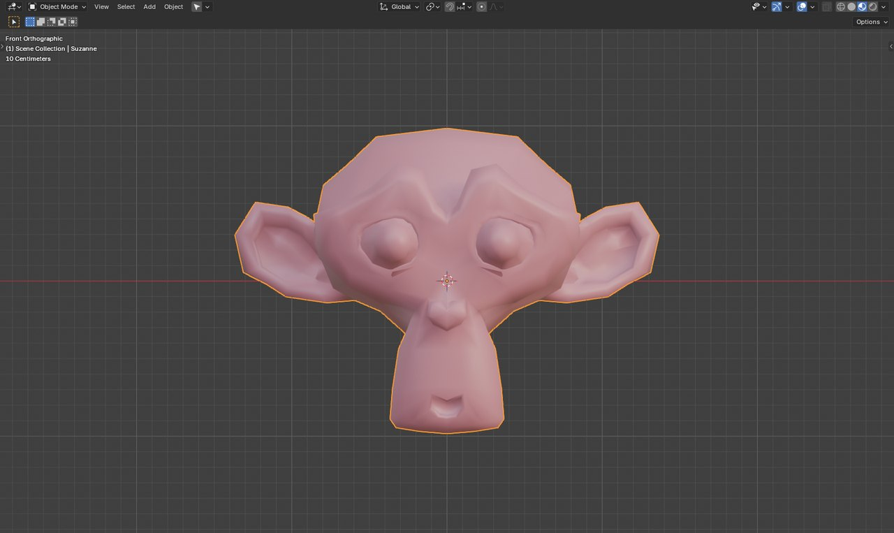
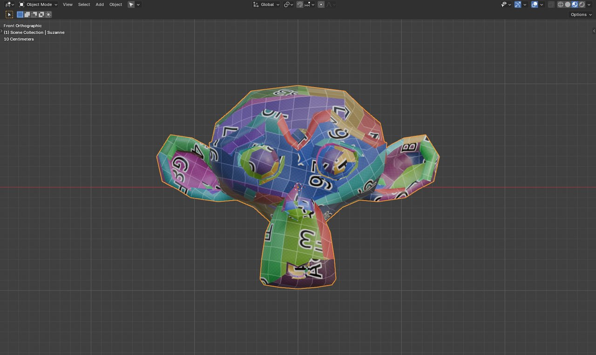
- In Object Mode, select just one mesh.
- In "Image Node to Replace" under "Material Color Correction", choose the image texture node.
- Set the color in "Correction Color (Linear RGBA)" and click "Copy Material and Correct Color".
- To revert, click "Restore Original Shared Material".
What to look for: Look at Suzanne's surface. The colored checker image changes to the single correction color, and the revert button brings back the original checker pattern.
ExampleWeaken the Rim Light(demonstrated on Suzanne)
Weaken the strength of the emission node that makes the edges glow by using a multiplier. A copy of the material is made and adjusted, so the original material does not change.
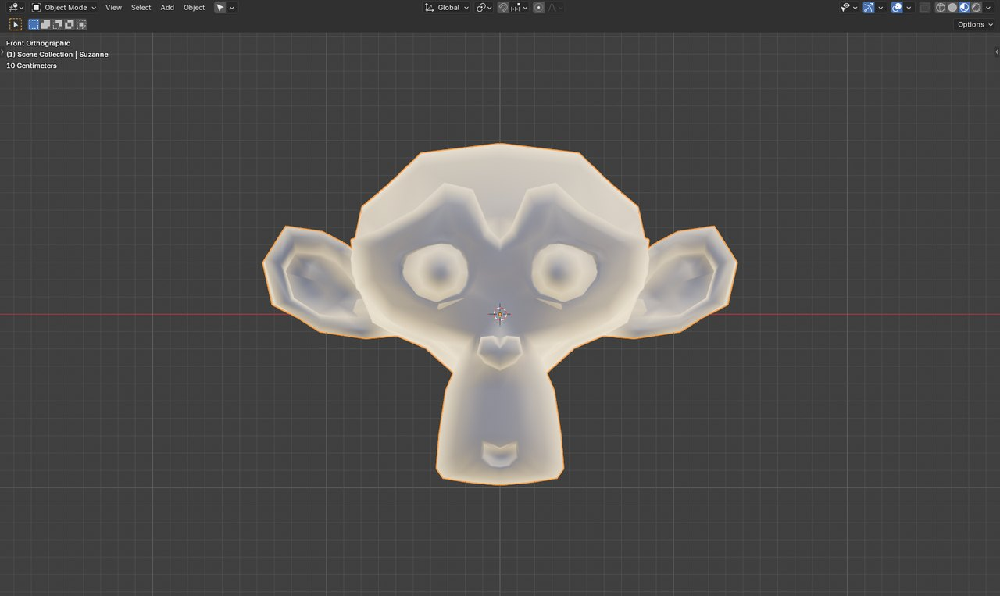
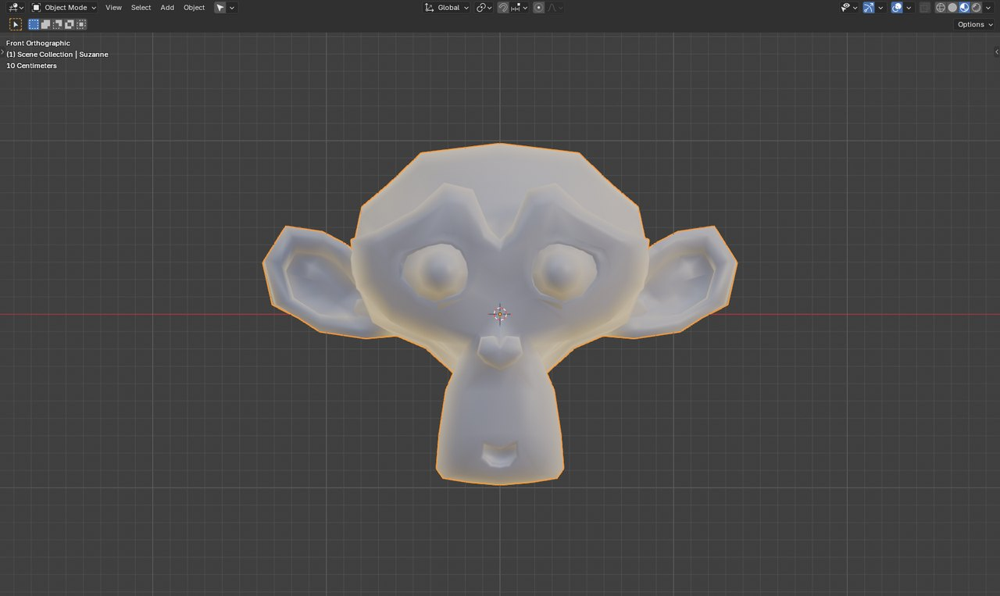
- In Object Mode, select just one mesh.
- In "Rim Mix or Emission Node", choose the rim light node from the list.
- Set "Rim Multiplier" to 0.2 and click "Adjust Selected Material Rim".
- To revert, click "Restore Original Shared Material".
What to look for: Look at Suzanne's edges. The edges that were glowing strongly become darker by the multiplier.
5-37. Live Target Group
Decides which object and which Shape Axis Group receive the output of the live Face Tracker. One row is one object plus one Group.
Location"Face Tracker (Built-In)" > "Live Target Group"
| Item | What it does |
|---|---|
| Target List | The rows used by the tracker. When "<Select>" appears, that object has no Group yet. |
| + / - | Adds / deletes a row. Deleting a row does not change the object or the Group. |
5-38. Tracker Settings
Decides how the selected target's Group reacts to the face, using a preset as a starting point. The section header shows "Tracker Settings: Group name".
Location"Face Tracker (Built-In)" > "Tracker Settings"
| Item | What it does |
|---|---|
| Mouth | Applies the initial values for reading mouth movement. |
| Eyes | Applies the initial values for reading eye (iris) movement. |
| Blink | Applies the initial values for reading blinks. |
5-39. X-Axis Mapping / Y-Axis Mapping
Converts raw landmark measurements into the Group's X or Y value. X and Y are set separately.
Location"Tracker Settings" > "X-Axis Mapping" and "Y-Axis Mapping"
| Item | What it does |
|---|---|
| Tracking Mode | Choose from "None", "2pt (Dist)", "1pt (Proj)", and "Iris". |
| Point A / Point B | The numbers of the landmarks to use. Look them up with "Reference Map". |
| Lower Bound / Upper Bound | The range of the raw input. |
| Capture Min / Capture Max | Writes the current raw value into the lower and upper limits. Capture the minimum with a neutral expression and the maximum with the strongest expression. |
| Min Target / Max Target | The range sent to the joystick. |
| Gain / Curve (Exponent) | The output multiplier (default 1) and the response exponent (default 1.2). |
| Enable Filter / Smooth Factor | The smoothness over time. "Smooth Factor" appears only when the filter is on (default 0.15). |
Other Screens

6. Common Tasks
Create Expression Shapes and Turn Them into Shape Keys
Create several expressions on one face mesh and export them as ordinary Shape Keys.
- Select the mesh and put it in a neutral expression. Keep Auto Keying off.
- Open "Basis and New Map", click "Set Base", and confirm.
- Click "New", enter a name (for example, smile), and confirm.
- In Edit Mode, reshape it into a smile. If you edited it in Sculpt Mode, return to Object Mode.
- Click the Basis in the "Maps" list. The current edit is saved to smile and the shape returns to the Basis.
- Repeat steps 3 to 5 to add more expressions.
- Open "Export", click "Export", set "Output" to "Shape Keys", and click OK.
Result: The Shape Keys for the expressions you created are listed under "Object Data" > "Shape Keys" in the Properties Editor.
Match Both Sides of an Expression Made on One Side
Copy a Map corrected on one side to the opposite side to make it left-right symmetrical.
- In the "Maps" list, click the Map whose shape was made on one side only.
- In Edit Mode, select all vertices.
- In "Mirror Tools", click the button whose arrow starts from the side where you made the shape.
- View from the front and compare left and right.
Result: The same shape is copied to the vertices on the opposite side and saved to the Map.
Carry Maps to Another Mesh
Save the Maps you made to a file, and load them into a mesh with the same structure in another .blend file, or into a mesh with the same UV layout.
- Select the mesh that has Maps, and click "Save (All)" in "Save/Load" to save to a file.
- Select the destination mesh, click "Load", and choose the file.
- In the window that opens, check the Maps to load and click OK.
- Click rows in the "Maps" list to check the shapes.
Result: The destination's Maps and Basis are replaced with those in the file, and the mesh shape becomes the loaded Basis.
Apply Modifiers While Keeping Shape Keys
Apply a Modifier such as Smooth to a mesh that has Shape Keys.
- Save a backup copy of the .blend file.
- Select the mesh and switch to Object Mode.
- Open "Modifiers" > "Apply Keeping Shape Keys".
- Click "Choose Modifiers", check only the ones you want to apply, and click OK.
Result: The selected Modifiers disappear from the list and all Shape Keys remain.
Move a Shape Key with a Bone Rotation
Make a Shape Key go from 0 to 1 when a bone is rotated from 0 to 45 degrees.
- Right-click the Shape Key value and choose "Add Driver". Name the variable var and specify the bone's rotation channel.
- With the mesh that has the Shape Key still selected, open "Drivers" > "Driver Helper" and choose ROT.
- Set "Min" to 0 and "Max" to 45.
- Click "Generate Formula" and copy the expression that appears.
- Paste it into the Driver's "Expression" field.
Result: When you rotate the bone, the Shape Key value changes from 0 to 1 between 0 and 45 degrees.
Blend Mouth Shapes with a Joystick
Blend and move multiple mouth Shape Keys with one X/Y handle.
- Select a mesh that has mouth Shape Keys.
- Go to "Control / Tracking" > "Shape Key Axis Control" > "Groups" and click "Create the First Group to Set Up".
- Add a row with + in "Mappings", and in "Mapping Settings" set the Shape Key and the target X and Y. Repeat for each Shape Key.
- Move "X (Drivable)" and "Y (Drivable)" in "Handle / Values" to check.
- To move it while watching, set "Axis UI" to "On" in "Always-on Toggle".
Result: When you bring the handle close to a target point, the value of that Shape Key rises.
Bake a Facial Capture CSV into the Facial Rig Bones
Put an ARKit expression CSV into a finished facial rig as an Action.
- Save a copy of your work under a different name and switch to Object Mode.
- Open "Face Tracker (Built-In)" > "Facial CSV Capture" and choose a "Facial Rig".
- In "Capture settings", set "Capture Destination" to "To Bones" and turn on "Keep Existing Actions for New Take".
- Confirm that "Bone Calibration (EDIT Only)" in "Calibration (EDIT Only)" is on.
- Click "Bake Facial CSV", choose the CSV file, and confirm.
- Read the result line, and click "RAW" and "EDIT" to compare them.
Result: Two Actions are created: RAW, which is the capture as recorded, and EDIT, for hand editing.
7. Troubleshooting
- Only one line appears in the panel.
- No mesh is selected, or you are in a mode other than Object Mode or Edit Mode. Select one mesh and switch to Object Mode or Edit Mode.
- Clicking the Map list does not switch the shape.
- You cannot switch while Auto Keying (automatic key insertion) is on. Turn it off. Also, when the "Maps" mode button is "Edit", clicking a row does not change the shape. Return it to "Select". On a mesh with Shape Keys, clicking in Edit Mode is refused (click in Object Mode). The shape is not visible while Shape Key pinning is on.
- The exported Shape Keys do not contain the shape I edited last.
- An edited shape is saved when you switch to another Map. Before exporting, click another Map in the list, and then use "Export".
- I clicked "Load" and the Maps I made disappeared.
- "Load" deletes the existing Maps (other than the Basis) and rebuilds the Maps from the Shape Keys. You can undo with Ctrl+Z.
- "Apply Keeping Shape Keys" fails.
- Modifiers that create a different mesh for each Shape Key (Decimate, Boolean, Bevel, Remesh, and so on) cannot be applied. The operation is aborted without changing the original mesh. A mesh that has Maps is also refused. If necessary, export them and then click "Delete All".
- The Face Tracker or UDP does not start.
- It cannot start if another app is using the camera or the UDP port. Close the other app first, or use a different port number. For the Face Tracker, you need to click "Install Face Tracker Requirements" the first time.
- Will features keep running and make things heavy when I am not using them?
- Features that run in the background run only when you set them to "On" in "Always-on Toggle". Features that are "Off" are stopped.
- How do I undo an operation?
- Most operations can be undone with Ctrl+Z. However, files written outside Blender are not removed by Ctrl+Z.
For problems common to every add-on, such as an add-on not appearing or the interface language not changing, see "Troubleshooting" in the SmartTools Overall Specification.
8. Glossary
- Shape Key
- A mechanism that stores a "change in shape" from the mesh's base shape and lets you blend it with a value from 0 to 1. Used for expressions and the like.
- Basis
- The shape that serves as the reference for Shape Keys and Maps (for example, a neutral expression).
- Map (Channel)
- A difference in shape from the Basis, stored inside this add-on. It is given a number (the channel number).
- Modifier
- A deformation or processing applied to a mesh afterward. When you apply it, it is reflected in the mesh itself.
- Driver
- A mechanism that automatically determines one value from another value (such as a bone rotation) using an expression.
- HUD
- A control panel or display overlaid on top of the 3D Viewport.
- UDP
- One method of sending values over a network. Used to receive values from other apps.
- Landmark
- A point that the Face Tracker reads on the face. Each point has a number.
- ARKit 52 Expressions
- A standard that describes facial expressions with 52 coefficients (0 to 1). They have names such as jawOpen (opening the mouth).
- Action
- A collection of keyframes. The content of an animation.
- RAW / EDIT
- The two Actions created by an import. RAW keeps the captured values as they are; EDIT has calibration and similar adjustments applied, and is for hand editing.
- Calibration Table
- A per-channel table for correcting captured values to a strength that suits that face.
- Corrective Key
- An additional Shape Key for fixing shape errors that occur when two expressions take effect at the same time.
- NLA
- A mechanism for stacking and arranging Actions. When there is a track in effect, the import stops.
- Auto Keying
- A feature that automatically inserts keys when you change a value. While it is on, you cannot switch Maps.
9. Appendix: Version, Checksum and Limitations
| Add-on | SmartShapekey Suite (smart_shapekey_suite) |
|---|---|
| Version | 1.0.0 |
| ZIP | SmartShapekeySuite_1.0.0.zip |
| Size | 4,246,621 bytes |
| SHA256 | 7d8e3a241b8fd5a21592a9dfe7fc229be2896ace2fde76f5bfb180e3f2f9eeae |
Limitations and Notes
- The panel contents appear only when the active object is a mesh and you are in Object Mode or Edit Mode.
- Maps can be created only on a mesh that is local and not shared with other objects.
- If you change the number or connectivity of vertices after "Set Base", saving, switching, and exporting shapes are refused.
- While Auto Keying is on, you cannot switch Maps.
- Files written outside Blender (JSON, CSV, .ssfacial, .ssmix, and so on) are not removed by Ctrl+Z.
- Apply Keeping Shape Keys cannot be used with Modifiers that create a different mesh for each Shape Key (Decimate, Boolean, Bevel, Remesh, and so on), or with a mesh that has Maps.
- On a mesh with Shape Keys, switch Maps in Object Mode. An absolute Shape Key cannot show the shape of a Map.
- The built-in Face Tracker and video import require installing the required components (an internet connection).
- Recorded video import is limited to 30 seconds, and CSV to 20 MiB. Tongue and head rotation cannot be captured from video.
- An import is limited to 250,000 keys in total for RAW and EDIT together. It cannot import while an NLA track is in effect.
- The shapes created by Generate Initial Shapes are drafts. They are not production quality as they are.
- The bundled calibration table and the default rule values are generic and not tailored to an individual. Even when the numbers look right, check the appearance by eye.
- The oral contact check only counts triangle intersections and does not judge whether something is visible or see-through.
- When loading into a mesh with a different vertex order, it also checks the largest difference between the positions reconstructed from the UVs and the destination's original positions. If the difference exceeds 0.5% of the diagonal length of the saved Basis's bounding box, it stops before changing the mesh. Local island offsets, distortion, and an example with the UVs scaled by 0.98 are also cases that stop. This is not a guarantee of detecting differences smaller than this tolerance, so also check the shape by eye after loading.
SmartShapekey Suite Manual v1.0.0 / Built 2026-11-19